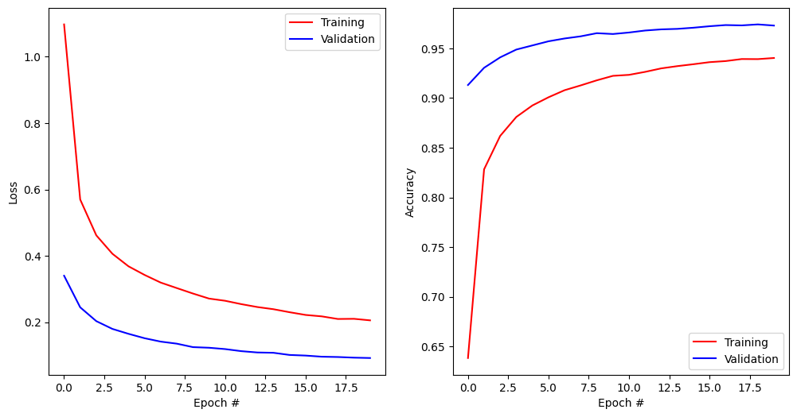

<!DOCTYPE html>
<html xmlns="http://www.w3.org/1999/xhtml" lang="en" xml:lang="en"><head>

<meta charset="utf-8">
<meta name="generator" content="quarto-1.8.26">

<meta name="viewport" content="width=device-width, initial-scale=1.0, user-scalable=yes">


<title>ANN-to-SNN conversion - MLP – ANNarchy 5.0.2</title>
<style>
code{white-space: pre-wrap;}
span.smallcaps{font-variant: small-caps;}
div.columns{display: flex; gap: min(4vw, 1.5em);}
div.column{flex: auto; overflow-x: auto;}
div.hanging-indent{margin-left: 1.5em; text-indent: -1.5em;}
ul.task-list{list-style: none;}
ul.task-list li input[type="checkbox"] {
  width: 0.8em;
  margin: 0 0.8em 0.2em -1em; /* quarto-specific, see https://github.com/quarto-dev/quarto-cli/issues/4556 */ 
  vertical-align: middle;
}
/* CSS for syntax highlighting */
html { -webkit-text-size-adjust: 100%; }
pre > code.sourceCode { white-space: pre; position: relative; }
pre > code.sourceCode > span { display: inline-block; line-height: 1.25; }
pre > code.sourceCode > span:empty { height: 1.2em; }
.sourceCode { overflow: visible; }
code.sourceCode > span { color: inherit; text-decoration: inherit; }
div.sourceCode { margin: 1em 0; }
pre.sourceCode { margin: 0; }
@media screen {
div.sourceCode { overflow: auto; }
}
@media print {
pre > code.sourceCode { white-space: pre-wrap; }
pre > code.sourceCode > span { text-indent: -5em; padding-left: 5em; }
}
pre.numberSource code
  { counter-reset: source-line 0; }
pre.numberSource code > span
  { position: relative; left: -4em; counter-increment: source-line; }
pre.numberSource code > span > a:first-child::before
  { content: counter(source-line);
    position: relative; left: -1em; text-align: right; vertical-align: baseline;
    border: none; display: inline-block;
    -webkit-touch-callout: none; -webkit-user-select: none;
    -khtml-user-select: none; -moz-user-select: none;
    -ms-user-select: none; user-select: none;
    padding: 0 4px; width: 4em;
  }
pre.numberSource { margin-left: 3em;  padding-left: 4px; }
div.sourceCode
  {   }
@media screen {
pre > code.sourceCode > span > a:first-child::before { text-decoration: underline; }
}
</style>


<script src="https://cdn.jsdelivr.net/npm/jquery@3.5.1/dist/jquery.min.js" integrity="sha384-ZvpUoO/+PpLXR1lu4jmpXWu80pZlYUAfxl5NsBMWOEPSjUn/6Z/hRTt8+pR6L4N2" crossorigin="anonymous"></script><script src="../site_libs/quarto-nav/quarto-nav.js"></script>
<script src="../site_libs/quarto-nav/headroom.min.js"></script>
<script src="../site_libs/clipboard/clipboard.min.js"></script>
<script src="../site_libs/quarto-search/autocomplete.umd.js"></script>
<script src="../site_libs/quarto-search/fuse.min.js"></script>
<script src="../site_libs/quarto-search/quarto-search.js"></script>
<meta name="quarto:offset" content="../">
<link href="../notebooks/ANN2SNN2.html" rel="next">
<link href="../notebooks/BoldMonitoring2.html" rel="prev">
<script src="../site_libs/quarto-html/quarto.js" type="module"></script>
<script src="../site_libs/quarto-html/tabsets/tabsets.js" type="module"></script>
<script src="../site_libs/quarto-html/axe/axe-check.js" type="module"></script>
<script src="../site_libs/quarto-html/popper.min.js"></script>
<script src="../site_libs/quarto-html/tippy.umd.min.js"></script>
<script src="../site_libs/quarto-html/anchor.min.js"></script>
<link href="../site_libs/quarto-html/tippy.css" rel="stylesheet">
<link href="../site_libs/quarto-html/quarto-syntax-highlighting-597958c53c93a607afca12fd375c57ed.css" rel="stylesheet" id="quarto-text-highlighting-styles">
<script src="../site_libs/bootstrap/bootstrap.min.js"></script>
<link href="../site_libs/bootstrap/bootstrap-icons.css" rel="stylesheet">
<link href="../site_libs/bootstrap/bootstrap-df0ce3d36294d4d0082a50f3c30bcf56.min.css" rel="stylesheet" append-hash="true" id="quarto-bootstrap" data-mode="light">
<script id="quarto-search-options" type="application/json">{
  "location": "navbar",
  "copy-button": false,
  "collapse-after": 3,
  "panel-placement": "end",
  "type": "overlay",
  "limit": 50,
  "keyboard-shortcut": [
    "f",
    "/",
    "s"
  ],
  "show-item-context": false,
  "language": {
    "search-no-results-text": "No results",
    "search-matching-documents-text": "matching documents",
    "search-copy-link-title": "Copy link to search",
    "search-hide-matches-text": "Hide additional matches",
    "search-more-match-text": "more match in this document",
    "search-more-matches-text": "more matches in this document",
    "search-clear-button-title": "Clear",
    "search-text-placeholder": "",
    "search-detached-cancel-button-title": "Cancel",
    "search-submit-button-title": "Submit",
    "search-label": "Search"
  }
}</script>
<style>html{ scroll-behavior: smooth; }</style>
<script src="https://cdn.jsdelivr.net/npm/requirejs@2.3.6/require.min.js" integrity="sha384-c9c+LnTbwQ3aujuU7ULEPVvgLs+Fn6fJUvIGTsuu1ZcCf11fiEubah0ttpca4ntM sha384-6V1/AdqZRWk1KAlWbKBlGhN7VG4iE/yAZcO6NZPMF8od0vukrvr0tg4qY6NSrItx" crossorigin="anonymous"></script>

<script type="application/javascript">define('jquery', [],function() {return window.jQuery;})</script>


</head>

<body class="nav-sidebar docked nav-fixed quarto-light">

<div id="quarto-search-results"></div>
  <header id="quarto-header" class="headroom fixed-top">
    <nav class="navbar navbar-expand-lg " data-bs-theme="dark">
      <div class="navbar-container container-fluid">
      <div class="navbar-brand-container mx-auto">
    <a href="../index.html" class="navbar-brand navbar-brand-logo">
    
    
    </a>
    <a class="navbar-brand" href="../index.html">
    <span class="navbar-title">ANNarchy 5.0.2</span>
    </a>
  </div>
            <div id="quarto-search" class="" title="Search"></div>
          <button class="navbar-toggler" type="button" data-bs-toggle="collapse" data-bs-target="#navbarCollapse" aria-controls="navbarCollapse" role="menu" aria-expanded="false" aria-label="Toggle navigation" onclick="if (window.quartoToggleHeadroom) { window.quartoToggleHeadroom(); }">
  <span class="navbar-toggler-icon"></span>
</button>
          <div class="collapse navbar-collapse" id="navbarCollapse">
            <ul class="navbar-nav navbar-nav-scroll ms-auto">
  <li class="nav-item">
    <a class="nav-link" href="../index.html"> 
<span class="menu-text">ANNarchy</span></a>
  </li>  
  <li class="nav-item">
    <a class="nav-link" href="../Installation.html"> 
<span class="menu-text">Installation</span></a>
  </li>  
  <li class="nav-item">
    <a class="nav-link" href="../tutorial/index.html"> 
<span class="menu-text">Tutorial</span></a>
  </li>  
  <li class="nav-item">
    <a class="nav-link" href="../manual/index.html"> 
<span class="menu-text">Manual</span></a>
  </li>  
  <li class="nav-item">
    <a class="nav-link active" href="../notebooks/index.html" aria-current="page"> 
<span class="menu-text">Notebooks</span></a>
  </li>  
  <li class="nav-item">
    <a class="nav-link" href="../reference/index.html"> 
<span class="menu-text">Reference</span></a>
  </li>  
  <li class="nav-item compact">
    <a class="nav-link" href="https://github.com/ANNarchy/ANNarchy"> <i class="bi bi-github" role="img" aria-label="GitHub">
</i> 
<span class="menu-text"></span></a>
  </li>  
</ul>
          </div> <!-- /navcollapse -->
            <div class="quarto-navbar-tools">
</div>
      </div> <!-- /container-fluid -->
    </nav>
  <nav class="quarto-secondary-nav">
    <div class="container-fluid d-flex">
      <button type="button" class="quarto-btn-toggle btn" data-bs-toggle="collapse" role="button" data-bs-target=".quarto-sidebar-collapse-item" aria-controls="quarto-sidebar" aria-expanded="false" aria-label="Toggle sidebar navigation" onclick="if (window.quartoToggleHeadroom) { window.quartoToggleHeadroom(); }">
        <i class="bi bi-layout-text-sidebar-reverse"></i>
      </button>
        <a class="flex-grow-1 no-decor" role="navigation" data-bs-toggle="collapse" data-bs-target=".quarto-sidebar-collapse-item" aria-controls="quarto-sidebar" aria-expanded="false" aria-label="Toggle sidebar navigation" onclick="if (window.quartoToggleHeadroom) { window.quartoToggleHeadroom(); }">      
          <h1 class="quarto-secondary-nav-title">ANN-to-SNN conversion - MLP</h1>
        </a>     
    </div>
  </nav>
</header>
<!-- content -->
<div id="quarto-content" class="quarto-container page-columns page-rows-contents page-layout-full page-navbar">
<!-- sidebar -->
  <nav id="quarto-sidebar" class="sidebar collapse collapse-horizontal quarto-sidebar-collapse-item sidebar-navigation docked overflow-auto">
    <div class="sidebar-menu-container"> 
    <ul class="list-unstyled mt-1">
        <li class="sidebar-item">
  <div class="sidebar-item-container"> 
  <a href="../notebooks/index.html" class="sidebar-item-text sidebar-link">
 <span class="menu-text">List of notebooks</span></a>
  </div>
</li>
        <li class="sidebar-item sidebar-item-section">
      <div class="sidebar-item-container"> 
            <a class="sidebar-item-text sidebar-link text-start" data-bs-toggle="collapse" data-bs-target="#quarto-sidebar-section-1" role="navigation" aria-expanded="true">
 <span class="menu-text"><strong>Rate-coded networks</strong></span></a>
          <a class="sidebar-item-toggle text-start" data-bs-toggle="collapse" data-bs-target="#quarto-sidebar-section-1" role="navigation" aria-expanded="true" aria-label="Toggle section">
            <i class="bi bi-chevron-right ms-2"></i>
          </a> 
      </div>
      <ul id="quarto-sidebar-section-1" class="collapse list-unstyled sidebar-section depth1 show">  
          <li class="sidebar-item">
  <div class="sidebar-item-container"> 
  <a href="../notebooks/RC.html" class="sidebar-item-text sidebar-link">
 <span class="menu-text">Echo-state networks</span></a>
  </div>
</li>
          <li class="sidebar-item">
  <div class="sidebar-item-container"> 
  <a href="../notebooks/NeuralField.html" class="sidebar-item-text sidebar-link">
 <span class="menu-text">Neural field</span></a>
  </div>
</li>
          <li class="sidebar-item">
  <div class="sidebar-item-container"> 
  <a href="../notebooks/BarLearning.html" class="sidebar-item-text sidebar-link">
 <span class="menu-text">Bar Learning</span></a>
  </div>
</li>
          <li class="sidebar-item">
  <div class="sidebar-item-container"> 
  <a href="../notebooks/Miconi.html" class="sidebar-item-text sidebar-link">
 <span class="menu-text">Miconi network</span></a>
  </div>
</li>
          <li class="sidebar-item">
  <div class="sidebar-item-container"> 
  <a href="../notebooks/StructuralPlasticity.html" class="sidebar-item-text sidebar-link">
 <span class="menu-text">Structural plasticity</span></a>
  </div>
</li>
      </ul>
  </li>
        <li class="sidebar-item sidebar-item-section">
      <div class="sidebar-item-container"> 
            <a class="sidebar-item-text sidebar-link text-start" data-bs-toggle="collapse" data-bs-target="#quarto-sidebar-section-2" role="navigation" aria-expanded="true">
 <span class="menu-text"><strong>Spiking networks</strong></span></a>
          <a class="sidebar-item-toggle text-start" data-bs-toggle="collapse" data-bs-target="#quarto-sidebar-section-2" role="navigation" aria-expanded="true" aria-label="Toggle section">
            <i class="bi bi-chevron-right ms-2"></i>
          </a> 
      </div>
      <ul id="quarto-sidebar-section-2" class="collapse list-unstyled sidebar-section depth1 show">  
          <li class="sidebar-item">
  <div class="sidebar-item-container"> 
  <a href="../notebooks/AdEx.html" class="sidebar-item-text sidebar-link">
 <span class="menu-text">AdEx</span></a>
  </div>
</li>
          <li class="sidebar-item">
  <div class="sidebar-item-container"> 
  <a href="../notebooks/PyNN.html" class="sidebar-item-text sidebar-link">
 <span class="menu-text">PyNN/Brian</span></a>
  </div>
</li>
          <li class="sidebar-item">
  <div class="sidebar-item-container"> 
  <a href="../notebooks/GIF_SN.html" class="sidebar-item-text sidebar-link">
 <span class="menu-text">GIF I</span></a>
  </div>
</li>
          <li class="sidebar-item">
  <div class="sidebar-item-container"> 
  <a href="../notebooks/GIF_CUBA.html" class="sidebar-item-text sidebar-link">
 <span class="menu-text">GIF II</span></a>
  </div>
</li>
          <li class="sidebar-item">
  <div class="sidebar-item-container"> 
  <a href="../notebooks/Izhikevich.html" class="sidebar-item-text sidebar-link">
 <span class="menu-text">Izhikevich</span></a>
  </div>
</li>
          <li class="sidebar-item">
  <div class="sidebar-item-container"> 
  <a href="../notebooks/SynapticTransmission.html" class="sidebar-item-text sidebar-link">
 <span class="menu-text">Synaptic transmission</span></a>
  </div>
</li>
          <li class="sidebar-item">
  <div class="sidebar-item-container"> 
  <a href="../notebooks/GapJunctions.html" class="sidebar-item-text sidebar-link">
 <span class="menu-text">Gap junctions</span></a>
  </div>
</li>
          <li class="sidebar-item">
  <div class="sidebar-item-container"> 
  <a href="../notebooks/HodgkinHuxley.html" class="sidebar-item-text sidebar-link">
 <span class="menu-text">Hodgkin-Huxley</span></a>
  </div>
</li>
          <li class="sidebar-item">
  <div class="sidebar-item-container"> 
  <a href="../notebooks/COBA.html" class="sidebar-item-text sidebar-link">
 <span class="menu-text">COBA/CUBA</span></a>
  </div>
</li>
          <li class="sidebar-item">
  <div class="sidebar-item-container"> 
  <a href="../notebooks/STP.html" class="sidebar-item-text sidebar-link">
 <span class="menu-text">STP</span></a>
  </div>
</li>
          <li class="sidebar-item">
  <div class="sidebar-item-container"> 
  <a href="../notebooks/STDP1.html" class="sidebar-item-text sidebar-link">
 <span class="menu-text">STDP I</span></a>
  </div>
</li>
          <li class="sidebar-item">
  <div class="sidebar-item-container"> 
  <a href="../notebooks/STDP2.html" class="sidebar-item-text sidebar-link">
 <span class="menu-text">STDP II</span></a>
  </div>
</li>
          <li class="sidebar-item">
  <div class="sidebar-item-container"> 
  <a href="../notebooks/Ramp.html" class="sidebar-item-text sidebar-link">
 <span class="menu-text">Homeostatic STDP - Ramp</span></a>
  </div>
</li>
          <li class="sidebar-item">
  <div class="sidebar-item-container"> 
  <a href="../notebooks/SORF.html" class="sidebar-item-text sidebar-link">
 <span class="menu-text">Homeostatic STDP - SORF</span></a>
  </div>
</li>
      </ul>
  </li>
        <li class="sidebar-item sidebar-item-section">
      <div class="sidebar-item-container"> 
            <a class="sidebar-item-text sidebar-link text-start" data-bs-toggle="collapse" data-bs-target="#quarto-sidebar-section-3" role="navigation" aria-expanded="true">
 <span class="menu-text"><strong>Advanced features</strong></span></a>
          <a class="sidebar-item-toggle text-start" data-bs-toggle="collapse" data-bs-target="#quarto-sidebar-section-3" role="navigation" aria-expanded="true" aria-label="Toggle section">
            <i class="bi bi-chevron-right ms-2"></i>
          </a> 
      </div>
      <ul id="quarto-sidebar-section-3" class="collapse list-unstyled sidebar-section depth1 show">  
          <li class="sidebar-item">
  <div class="sidebar-item-container"> 
  <a href="../notebooks/Hybrid.html" class="sidebar-item-text sidebar-link">
 <span class="menu-text">Hybrid networks</span></a>
  </div>
</li>
          <li class="sidebar-item">
  <div class="sidebar-item-container"> 
  <a href="../notebooks/MultipleNetworks.html" class="sidebar-item-text sidebar-link">
 <span class="menu-text">Parallel run</span></a>
  </div>
</li>
          <li class="sidebar-item">
  <div class="sidebar-item-container"> 
  <a href="../notebooks/BayesianOptimization.html" class="sidebar-item-text sidebar-link">
 <span class="menu-text">Bayesian optimization</span></a>
  </div>
</li>
      </ul>
  </li>
        <li class="sidebar-item sidebar-item-section">
      <div class="sidebar-item-container"> 
            <a class="sidebar-item-text sidebar-link text-start" data-bs-toggle="collapse" data-bs-target="#quarto-sidebar-section-4" role="navigation" aria-expanded="true">
 <span class="menu-text"><strong>Extensions</strong></span></a>
          <a class="sidebar-item-toggle text-start" data-bs-toggle="collapse" data-bs-target="#quarto-sidebar-section-4" role="navigation" aria-expanded="true" aria-label="Toggle section">
            <i class="bi bi-chevron-right ms-2"></i>
          </a> 
      </div>
      <ul id="quarto-sidebar-section-4" class="collapse list-unstyled sidebar-section depth1 show">  
          <li class="sidebar-item">
  <div class="sidebar-item-container"> 
  <a href="../notebooks/Image.html" class="sidebar-item-text sidebar-link">
 <span class="menu-text">Image</span></a>
  </div>
</li>
          <li class="sidebar-item">
  <div class="sidebar-item-container"> 
  <a href="../notebooks/BasalGanglia.html" class="sidebar-item-text sidebar-link">
 <span class="menu-text">Tensorboard</span></a>
  </div>
</li>
          <li class="sidebar-item">
  <div class="sidebar-item-container"> 
  <a href="../notebooks/BoldMonitoring1.html" class="sidebar-item-text sidebar-link">
 <span class="menu-text">BOLD monitor I</span></a>
  </div>
</li>
          <li class="sidebar-item">
  <div class="sidebar-item-container"> 
  <a href="../notebooks/BoldMonitoring2.html" class="sidebar-item-text sidebar-link">
 <span class="menu-text">BOLD monitor II</span></a>
  </div>
</li>
          <li class="sidebar-item">
  <div class="sidebar-item-container"> 
  <a href="../notebooks/ANN2SNN.html" class="sidebar-item-text sidebar-link active">
 <span class="menu-text">ANN to SNN I</span></a>
  </div>
</li>
          <li class="sidebar-item">
  <div class="sidebar-item-container"> 
  <a href="../notebooks/ANN2SNN2.html" class="sidebar-item-text sidebar-link">
 <span class="menu-text">ANN to SNN II</span></a>
  </div>
</li>
      </ul>
  </li>
    </ul>
    </div>
</nav>
<div id="quarto-sidebar-glass" class="quarto-sidebar-collapse-item" data-bs-toggle="collapse" data-bs-target=".quarto-sidebar-collapse-item"></div>
<!-- margin-sidebar -->
    <div id="quarto-margin-sidebar" class="sidebar margin-sidebar">
        <nav id="TOC" role="doc-toc" class="toc-active">
    <h2 id="toc-title">On this page</h2>
   
  <ul>
  <li><a href="#training-an-ann-in-tensorflowkeras" id="toc-training-an-ann-in-tensorflowkeras" class="nav-link active" data-scroll-target="#training-an-ann-in-tensorflowkeras">Training an ANN in tensorflow/keras</a></li>
  <li><a href="#initialize-the-ann-to-snn-converter" id="toc-initialize-the-ann-to-snn-converter" class="nav-link" data-scroll-target="#initialize-the-ann-to-snn-converter">Initialize the ANN-to-SNN converter</a></li>
  </ul>
</nav>
    </div>
<!-- main -->
<main class="content column-body" id="quarto-document-content">

<header id="title-block-header" class="quarto-title-block default">
<div class="quarto-title">
<h1 class="title d-none d-lg-block">ANN-to-SNN conversion - MLP</h1>
</div>


<div class="quarto-title-meta column-body">

    
  
    
  </div>
  


</header>


<p><a href="https://raw.githubusercontent.com/ANNarchy/ANNarchy.github.io/master/notebooks/ANN2SNN.ipynb"></a> <a href="https://colab.research.google.com/github/ANNarchy/ANNarchy.github.io/blob/master/notebooks/ANN2SNN.ipynb"></a></p>
<p>This notebook demonstrates how to transform a fully-connected neural network trained using tensorflow/keras into an SNN network usable in ANNarchy.</p>
<p>The methods are adapted from the original models used in:</p>
<blockquote class="blockquote">
<p>Diehl et al.&nbsp;(2015) “Fast-classifying, high-accuracy spiking deep networks through weight and threshold balancing” Proceedings of IJCNN. doi: 10.1109/IJCNN.2015.7280696</p>
</blockquote>
<div id="cell-3" class="cell" data-quarto-private-1="{&quot;key&quot;:&quot;execution&quot;,&quot;value&quot;:{&quot;iopub.execute_input&quot;:&quot;2026-05-11T07:49:59.830304Z&quot;,&quot;iopub.status.busy&quot;:&quot;2026-05-11T07:49:59.829388Z&quot;,&quot;iopub.status.idle&quot;:&quot;2026-05-11T07:49:59.841162Z&quot;,&quot;shell.execute_reply&quot;:&quot;2026-05-11T07:49:59.838055Z&quot;}}" data-execution_count="1">
<div class="code-copy-outer-scaffold"><div class="sourceCode cell-code" id="cb8"><pre class="sourceCode python code-with-copy"><code class="sourceCode python"><span id="cb8-1"><a href="#cb8-1" aria-hidden="true" tabindex="-1"></a><span class="co">#!pip install ANNarchy</span></span></code></pre></div><button title="Copy to Clipboard" class="code-copy-button"><i class="bi"></i></button></div>
</div>
<div id="cell-4" class="cell" data-quarto-private-1="{&quot;key&quot;:&quot;execution&quot;,&quot;value&quot;:{&quot;iopub.execute_input&quot;:&quot;2026-05-11T07:49:59.848044Z&quot;,&quot;iopub.status.busy&quot;:&quot;2026-05-11T07:49:59.847246Z&quot;,&quot;iopub.status.idle&quot;:&quot;2026-05-11T07:50:06.920143Z&quot;,&quot;shell.execute_reply&quot;:&quot;2026-05-11T07:50:06.917421Z&quot;}}" data-execution_count="2">
<div class="code-copy-outer-scaffold"><div class="sourceCode cell-code" id="cb9"><pre class="sourceCode python code-with-copy"><code class="sourceCode python"><span id="cb9-1"><a href="#cb9-1" aria-hidden="true" tabindex="-1"></a><span class="im">import</span> numpy <span class="im">as</span> np</span>
<span id="cb9-2"><a href="#cb9-2" aria-hidden="true" tabindex="-1"></a><span class="im">import</span> matplotlib.pyplot <span class="im">as</span> plt</span>
<span id="cb9-3"><a href="#cb9-3" aria-hidden="true" tabindex="-1"></a></span>
<span id="cb9-4"><a href="#cb9-4" aria-hidden="true" tabindex="-1"></a><span class="im">import</span> tensorflow <span class="im">as</span> tf</span>
<span id="cb9-5"><a href="#cb9-5" aria-hidden="true" tabindex="-1"></a><span class="bu">print</span>(<span class="ss">f"Tensorflow </span><span class="sc">{</span>tf<span class="sc">.</span>__version__<span class="sc">}</span><span class="ss">"</span>)</span></code></pre></div><button title="Copy to Clipboard" class="code-copy-button"><i class="bi"></i></button></div>
<div class="cell-output cell-output-stderr">
<pre><code>2026-05-11 09:50:00.340179: I external/local_xla/xla/tsl/cuda/cudart_stub.cc:32] Could not find cuda drivers on your machine, GPU will not be used.
2026-05-11 09:50:00.343170: I external/local_xla/xla/tsl/cuda/cudart_stub.cc:32] Could not find cuda drivers on your machine, GPU will not be used.
2026-05-11 09:50:00.352172: E external/local_xla/xla/stream_executor/cuda/cuda_fft.cc:485] Unable to register cuFFT factory: Attempting to register factory for plugin cuFFT when one has already been registered
2026-05-11 09:50:00.367295: E external/local_xla/xla/stream_executor/cuda/cuda_dnn.cc:8454] Unable to register cuDNN factory: Attempting to register factory for plugin cuDNN when one has already been registered
2026-05-11 09:50:00.371591: E external/local_xla/xla/stream_executor/cuda/cuda_blas.cc:1452] Unable to register cuBLAS factory: Attempting to register factory for plugin cuBLAS when one has already been registered
2026-05-11 09:50:00.382531: I tensorflow/core/platform/cpu_feature_guard.cc:210] This TensorFlow binary is optimized to use available CPU instructions in performance-critical operations.
To enable the following instructions: AVX2 FMA, in other operations, rebuild TensorFlow with the appropriate compiler flags.
2026-05-11 09:50:02.350068: W tensorflow/compiler/tf2tensorrt/utils/py_utils.cc:38] TF-TRT Warning: Could not find TensorRT</code></pre>
</div>
<div class="cell-output cell-output-stdout">
<pre><code>Tensorflow 2.17.0</code></pre>
</div>
</div>
<p>First we need to download and process the MNIST dataset provided by tensorflow.</p>
<div id="cell-6" class="cell" data-quarto-private-1="{&quot;key&quot;:&quot;execution&quot;,&quot;value&quot;:{&quot;iopub.execute_input&quot;:&quot;2026-05-11T07:50:06.926902Z&quot;,&quot;iopub.status.busy&quot;:&quot;2026-05-11T07:50:06.925897Z&quot;,&quot;iopub.status.idle&quot;:&quot;2026-05-11T07:50:07.401683Z&quot;,&quot;shell.execute_reply&quot;:&quot;2026-05-11T07:50:07.400719Z&quot;}}" data-execution_count="3">
<div class="code-copy-outer-scaffold"><div class="sourceCode cell-code" id="cb12"><pre class="sourceCode python code-with-copy"><code class="sourceCode python"><span id="cb12-1"><a href="#cb12-1" aria-hidden="true" tabindex="-1"></a><span class="co"># Download data</span></span>
<span id="cb12-2"><a href="#cb12-2" aria-hidden="true" tabindex="-1"></a>(X_train, t_train), (X_test, t_test) <span class="op">=</span> tf.keras.datasets.mnist.load_data()</span>
<span id="cb12-3"><a href="#cb12-3" aria-hidden="true" tabindex="-1"></a></span>
<span id="cb12-4"><a href="#cb12-4" aria-hidden="true" tabindex="-1"></a><span class="co"># Normalize inputs</span></span>
<span id="cb12-5"><a href="#cb12-5" aria-hidden="true" tabindex="-1"></a>X_train <span class="op">=</span> X_train.reshape(X_train.shape[<span class="dv">0</span>], <span class="dv">784</span>).astype(<span class="st">'float32'</span>) <span class="op">/</span> <span class="fl">255.</span></span>
<span id="cb12-6"><a href="#cb12-6" aria-hidden="true" tabindex="-1"></a>X_test <span class="op">=</span> X_test.reshape(X_test.shape[<span class="dv">0</span>], <span class="dv">784</span>).astype(<span class="st">'float32'</span>) <span class="op">/</span> <span class="fl">255.</span></span>
<span id="cb12-7"><a href="#cb12-7" aria-hidden="true" tabindex="-1"></a></span>
<span id="cb12-8"><a href="#cb12-8" aria-hidden="true" tabindex="-1"></a><span class="co"># One-hot output vectors</span></span>
<span id="cb12-9"><a href="#cb12-9" aria-hidden="true" tabindex="-1"></a>T_train <span class="op">=</span> tf.keras.utils.to_categorical(t_train, <span class="dv">10</span>)</span>
<span id="cb12-10"><a href="#cb12-10" aria-hidden="true" tabindex="-1"></a>T_test <span class="op">=</span> tf.keras.utils.to_categorical(t_test, <span class="dv">10</span>)</span></code></pre></div><button title="Copy to Clipboard" class="code-copy-button"><i class="bi"></i></button></div>
</div>
<section id="training-an-ann-in-tensorflowkeras" class="level2">
<h2 class="anchored" data-anchor-id="training-an-ann-in-tensorflowkeras">Training an ANN in tensorflow/keras</h2>
<p>The <code>tensorflow.keras</code> network is build using the functional API.</p>
<p>The fully-connected network has two fully connected layers with ReLU, <strong>no bias</strong>, dropout at 0.5, and a softmax output layer with 10 neurons. We use the standard SGD optimizer and the categorical crossentropy loss for classification.</p>
<div id="cell-8" class="cell" data-quarto-private-1="{&quot;key&quot;:&quot;execution&quot;,&quot;value&quot;:{&quot;iopub.execute_input&quot;:&quot;2026-05-11T07:50:07.404373Z&quot;,&quot;iopub.status.busy&quot;:&quot;2026-05-11T07:50:07.404214Z&quot;,&quot;iopub.status.idle&quot;:&quot;2026-05-11T07:50:07.408457Z&quot;,&quot;shell.execute_reply&quot;:&quot;2026-05-11T07:50:07.407614Z&quot;}}" data-execution_count="4">
<div class="code-copy-outer-scaffold"><div class="sourceCode cell-code" id="cb13"><pre class="sourceCode python code-with-copy"><code class="sourceCode python"><span id="cb13-1"><a href="#cb13-1" aria-hidden="true" tabindex="-1"></a><span class="kw">def</span> create_mlp():</span>
<span id="cb13-2"><a href="#cb13-2" aria-hidden="true" tabindex="-1"></a>    <span class="co"># Model</span></span>
<span id="cb13-3"><a href="#cb13-3" aria-hidden="true" tabindex="-1"></a>    inputs <span class="op">=</span> tf.keras.layers.Input(shape<span class="op">=</span>(<span class="dv">784</span>,))</span>
<span id="cb13-4"><a href="#cb13-4" aria-hidden="true" tabindex="-1"></a>    x<span class="op">=</span> tf.keras.layers.Dense(<span class="dv">128</span>, use_bias<span class="op">=</span><span class="va">False</span>, activation<span class="op">=</span><span class="st">'relu'</span>)(inputs)</span>
<span id="cb13-5"><a href="#cb13-5" aria-hidden="true" tabindex="-1"></a>    x <span class="op">=</span> tf.keras.layers.Dropout(<span class="fl">0.5</span>)(x)</span>
<span id="cb13-6"><a href="#cb13-6" aria-hidden="true" tabindex="-1"></a>    x<span class="op">=</span> tf.keras.layers.Dense(<span class="dv">128</span>, use_bias<span class="op">=</span><span class="va">False</span>, activation<span class="op">=</span><span class="st">'relu'</span>)(x)</span>
<span id="cb13-7"><a href="#cb13-7" aria-hidden="true" tabindex="-1"></a>    x <span class="op">=</span> tf.keras.layers.Dropout(<span class="fl">0.5</span>)(x)</span>
<span id="cb13-8"><a href="#cb13-8" aria-hidden="true" tabindex="-1"></a>    x<span class="op">=</span>tf.keras.layers.Dense(<span class="dv">10</span>, use_bias<span class="op">=</span><span class="va">False</span>, activation<span class="op">=</span><span class="st">'softmax'</span>)(x)</span>
<span id="cb13-9"><a href="#cb13-9" aria-hidden="true" tabindex="-1"></a></span>
<span id="cb13-10"><a href="#cb13-10" aria-hidden="true" tabindex="-1"></a>    model<span class="op">=</span> tf.keras.Model(inputs, x)</span>
<span id="cb13-11"><a href="#cb13-11" aria-hidden="true" tabindex="-1"></a></span>
<span id="cb13-12"><a href="#cb13-12" aria-hidden="true" tabindex="-1"></a>    <span class="co"># Optimizer</span></span>
<span id="cb13-13"><a href="#cb13-13" aria-hidden="true" tabindex="-1"></a>    optimizer <span class="op">=</span> tf.keras.optimizers.SGD(learning_rate<span class="op">=</span><span class="fl">0.05</span>)</span>
<span id="cb13-14"><a href="#cb13-14" aria-hidden="true" tabindex="-1"></a></span>
<span id="cb13-15"><a href="#cb13-15" aria-hidden="true" tabindex="-1"></a>    <span class="co"># Loss function</span></span>
<span id="cb13-16"><a href="#cb13-16" aria-hidden="true" tabindex="-1"></a>    model.<span class="bu">compile</span>(</span>
<span id="cb13-17"><a href="#cb13-17" aria-hidden="true" tabindex="-1"></a>        loss<span class="op">=</span><span class="st">'categorical_crossentropy'</span>, <span class="co"># loss function</span></span>
<span id="cb13-18"><a href="#cb13-18" aria-hidden="true" tabindex="-1"></a>        optimizer<span class="op">=</span>optimizer, <span class="co"># learning rule</span></span>
<span id="cb13-19"><a href="#cb13-19" aria-hidden="true" tabindex="-1"></a>        metrics<span class="op">=</span>[<span class="st">'accuracy'</span>] <span class="co"># show accuracy</span></span>
<span id="cb13-20"><a href="#cb13-20" aria-hidden="true" tabindex="-1"></a>    )</span>
<span id="cb13-21"><a href="#cb13-21" aria-hidden="true" tabindex="-1"></a>    <span class="bu">print</span>(model.summary())</span>
<span id="cb13-22"><a href="#cb13-22" aria-hidden="true" tabindex="-1"></a></span>
<span id="cb13-23"><a href="#cb13-23" aria-hidden="true" tabindex="-1"></a>    <span class="cf">return</span> model</span></code></pre></div><button title="Copy to Clipboard" class="code-copy-button"><i class="bi"></i></button></div>
</div>
<p>We can now train the network and save the weights in the HDF5 format.</p>
<div id="cell-10" class="cell" data-quarto-private-1="{&quot;key&quot;:&quot;execution&quot;,&quot;value&quot;:{&quot;iopub.execute_input&quot;:&quot;2026-05-11T07:50:07.410294Z&quot;,&quot;iopub.status.busy&quot;:&quot;2026-05-11T07:50:07.410045Z&quot;,&quot;iopub.status.idle&quot;:&quot;2026-05-11T07:50:27.396767Z&quot;,&quot;shell.execute_reply&quot;:&quot;2026-05-11T07:50:27.396175Z&quot;}}" data-execution_count="5">
<div class="code-copy-outer-scaffold"><div class="sourceCode cell-code" id="cb14"><pre class="sourceCode python code-with-copy"><code class="sourceCode python"><span id="cb14-1"><a href="#cb14-1" aria-hidden="true" tabindex="-1"></a><span class="co"># Create model</span></span>
<span id="cb14-2"><a href="#cb14-2" aria-hidden="true" tabindex="-1"></a>model <span class="op">=</span> create_mlp()</span>
<span id="cb14-3"><a href="#cb14-3" aria-hidden="true" tabindex="-1"></a></span>
<span id="cb14-4"><a href="#cb14-4" aria-hidden="true" tabindex="-1"></a><span class="co"># Train model</span></span>
<span id="cb14-5"><a href="#cb14-5" aria-hidden="true" tabindex="-1"></a>history <span class="op">=</span> model.fit(</span>
<span id="cb14-6"><a href="#cb14-6" aria-hidden="true" tabindex="-1"></a>    X_train, T_train,       <span class="co"># training data</span></span>
<span id="cb14-7"><a href="#cb14-7" aria-hidden="true" tabindex="-1"></a>    batch_size<span class="op">=</span><span class="dv">128</span>,          <span class="co"># batch size</span></span>
<span id="cb14-8"><a href="#cb14-8" aria-hidden="true" tabindex="-1"></a>    epochs<span class="op">=</span><span class="dv">20</span>,              <span class="co"># Maximum number of epochs</span></span>
<span id="cb14-9"><a href="#cb14-9" aria-hidden="true" tabindex="-1"></a>    validation_split<span class="op">=</span><span class="fl">0.1</span>,   <span class="co"># Percentage of training data used for validation</span></span>
<span id="cb14-10"><a href="#cb14-10" aria-hidden="true" tabindex="-1"></a>)</span>
<span id="cb14-11"><a href="#cb14-11" aria-hidden="true" tabindex="-1"></a></span>
<span id="cb14-12"><a href="#cb14-12" aria-hidden="true" tabindex="-1"></a>model.save(<span class="st">"runs/mlp.keras"</span>)</span>
<span id="cb14-13"><a href="#cb14-13" aria-hidden="true" tabindex="-1"></a></span>
<span id="cb14-14"><a href="#cb14-14" aria-hidden="true" tabindex="-1"></a><span class="co"># Test model</span></span>
<span id="cb14-15"><a href="#cb14-15" aria-hidden="true" tabindex="-1"></a>predictions_keras <span class="op">=</span> model.predict(X_test, verbose<span class="op">=</span><span class="dv">0</span>)</span>
<span id="cb14-16"><a href="#cb14-16" aria-hidden="true" tabindex="-1"></a>test_loss, test_accuracy <span class="op">=</span> model.evaluate(X_test, T_test, verbose<span class="op">=</span><span class="dv">0</span>)</span>
<span id="cb14-17"><a href="#cb14-17" aria-hidden="true" tabindex="-1"></a><span class="bu">print</span>(<span class="ss">f"Test accuracy: </span><span class="sc">{</span>test_accuracy<span class="sc">}</span><span class="ss">"</span>)</span></code></pre></div><button title="Copy to Clipboard" class="code-copy-button"><i class="bi"></i></button></div>
<div class="cell-output cell-output-stderr">
<pre><code>2026-05-11 09:50:07.432784: E external/local_xla/xla/stream_executor/cuda/cuda_driver.cc:266] failed call to cuInit: CUDA_ERROR_NO_DEVICE: no CUDA-capable device is detected
2026-05-11 09:50:07.432811: I external/local_xla/xla/stream_executor/cuda/cuda_diagnostics.cc:135] retrieving CUDA diagnostic information for host: twix
2026-05-11 09:50:07.432817: I external/local_xla/xla/stream_executor/cuda/cuda_diagnostics.cc:142] hostname: twix
2026-05-11 09:50:07.432909: I external/local_xla/xla/stream_executor/cuda/cuda_diagnostics.cc:166] libcuda reported version is: 520.61.5
2026-05-11 09:50:07.432927: I external/local_xla/xla/stream_executor/cuda/cuda_diagnostics.cc:170] kernel reported version is: 470.256.2
2026-05-11 09:50:07.432933: E external/local_xla/xla/stream_executor/cuda/cuda_diagnostics.cc:252] kernel version 470.256.2 does not match DSO version 520.61.5 -- cannot find working devices in this configuration</code></pre>
</div>
<div class="cell-output cell-output-display">
<pre style="white-space:pre;overflow-x:auto;line-height:normal;font-family:Menlo,'DejaVu Sans Mono',consolas,'Courier New',monospace"><span style="font-weight: bold">Model: "functional"</span>
</pre>
</div>
<div class="cell-output cell-output-display">
<pre style="white-space:pre;overflow-x:auto;line-height:normal;font-family:Menlo,'DejaVu Sans Mono',consolas,'Courier New',monospace">┏━━━━━━━━━━━━━━━━━━━━━━━━━━━━━━━━━┳━━━━━━━━━━━━━━━━━━━━━━━━┳━━━━━━━━━━━━━━━┓
┃<span style="font-weight: bold"> Layer (type)                    </span>┃<span style="font-weight: bold"> Output Shape           </span>┃<span style="font-weight: bold">       Param # </span>┃
┡━━━━━━━━━━━━━━━━━━━━━━━━━━━━━━━━━╇━━━━━━━━━━━━━━━━━━━━━━━━╇━━━━━━━━━━━━━━━┩
│ input_layer (<span style="color: #0087ff; text-decoration-color: #0087ff">InputLayer</span>)        │ (<span style="color: #00d7ff; text-decoration-color: #00d7ff">None</span>, <span style="color: #00af00; text-decoration-color: #00af00">784</span>)            │             <span style="color: #00af00; text-decoration-color: #00af00">0</span> │
├─────────────────────────────────┼────────────────────────┼───────────────┤
│ dense (<span style="color: #0087ff; text-decoration-color: #0087ff">Dense</span>)                   │ (<span style="color: #00d7ff; text-decoration-color: #00d7ff">None</span>, <span style="color: #00af00; text-decoration-color: #00af00">128</span>)            │       <span style="color: #00af00; text-decoration-color: #00af00">100,352</span> │
├─────────────────────────────────┼────────────────────────┼───────────────┤
│ dropout (<span style="color: #0087ff; text-decoration-color: #0087ff">Dropout</span>)               │ (<span style="color: #00d7ff; text-decoration-color: #00d7ff">None</span>, <span style="color: #00af00; text-decoration-color: #00af00">128</span>)            │             <span style="color: #00af00; text-decoration-color: #00af00">0</span> │
├─────────────────────────────────┼────────────────────────┼───────────────┤
│ dense_1 (<span style="color: #0087ff; text-decoration-color: #0087ff">Dense</span>)                 │ (<span style="color: #00d7ff; text-decoration-color: #00d7ff">None</span>, <span style="color: #00af00; text-decoration-color: #00af00">128</span>)            │        <span style="color: #00af00; text-decoration-color: #00af00">16,384</span> │
├─────────────────────────────────┼────────────────────────┼───────────────┤
│ dropout_1 (<span style="color: #0087ff; text-decoration-color: #0087ff">Dropout</span>)             │ (<span style="color: #00d7ff; text-decoration-color: #00d7ff">None</span>, <span style="color: #00af00; text-decoration-color: #00af00">128</span>)            │             <span style="color: #00af00; text-decoration-color: #00af00">0</span> │
├─────────────────────────────────┼────────────────────────┼───────────────┤
│ dense_2 (<span style="color: #0087ff; text-decoration-color: #0087ff">Dense</span>)                 │ (<span style="color: #00d7ff; text-decoration-color: #00d7ff">None</span>, <span style="color: #00af00; text-decoration-color: #00af00">10</span>)             │         <span style="color: #00af00; text-decoration-color: #00af00">1,280</span> │
└─────────────────────────────────┴────────────────────────┴───────────────┘
</pre>
</div>
<div class="cell-output cell-output-display">
<pre style="white-space:pre;overflow-x:auto;line-height:normal;font-family:Menlo,'DejaVu Sans Mono',consolas,'Courier New',monospace"><span style="font-weight: bold"> Total params: </span><span style="color: #00af00; text-decoration-color: #00af00">118,016</span> (461.00 KB)
</pre>
</div>
<div class="cell-output cell-output-display">
<pre style="white-space:pre;overflow-x:auto;line-height:normal;font-family:Menlo,'DejaVu Sans Mono',consolas,'Courier New',monospace"><span style="font-weight: bold"> Trainable params: </span><span style="color: #00af00; text-decoration-color: #00af00">118,016</span> (461.00 KB)
</pre>
</div>
<div class="cell-output cell-output-display">
<pre style="white-space:pre;overflow-x:auto;line-height:normal;font-family:Menlo,'DejaVu Sans Mono',consolas,'Courier New',monospace"><span style="font-weight: bold"> Non-trainable params: </span><span style="color: #00af00; text-decoration-color: #00af00">0</span> (0.00 B)
</pre>
</div>
<div class="cell-output cell-output-stdout">
<pre><code>None
Epoch 1/20</code></pre>
</div>
<div class="cell-output cell-output-stderr">
<pre><code>2026-05-11 09:50:07.555050: W external/local_tsl/tsl/framework/cpu_allocator_impl.cc:83] Allocation of 169344000 exceeds 10% of free system memory.</code></pre>
</div>
<div class="cell-output cell-output-stdout">
<div class="ansi-escaped-output">
<pre><span class="ansi-bold">  1/422</span> <span class="ansi-white-fg">━━━━━━━━━━━━━━━━━━━━</span> <span class="ansi-bold">2:46</span> 396ms/step - accuracy: 0.1328 - loss: 2.3993

<span class="ansi-bold"> 27/422</span> <span class="ansi-green-fg">━</span><span class="ansi-white-fg">━━━━━━━━━━━━━━━━━━━</span> <span class="ansi-bold">0s</span> 2ms/step - accuracy: 0.1421 - loss: 2.3357    

<span class="ansi-bold"> 56/422</span> <span class="ansi-green-fg">━━</span><span class="ansi-white-fg">━━━━━━━━━━━━━━━━━━</span> <span class="ansi-bold">0s</span> 2ms/step - accuracy: 0.1933 - loss: 2.2348

<span class="ansi-bold"> 85/422</span> <span class="ansi-green-fg">━━━━</span><span class="ansi-white-fg">━━━━━━━━━━━━━━━━</span> <span class="ansi-bold">0s</span> 2ms/step - accuracy: 0.2377 - loss: 2.1456

<span class="ansi-bold">113/422</span> <span class="ansi-green-fg">━━━━━</span><span class="ansi-white-fg">━━━━━━━━━━━━━━━</span> <span class="ansi-bold">0s</span> 2ms/step - accuracy: 0.2737 - loss: 2.0656

<span class="ansi-bold">140/422</span> <span class="ansi-green-fg">━━━━━━</span><span class="ansi-white-fg">━━━━━━━━━━━━━━</span> <span class="ansi-bold">0s</span> 2ms/step - accuracy: 0.3039 - loss: 1.9943

<span class="ansi-bold">166/422</span> <span class="ansi-green-fg">━━━━━━━</span><span class="ansi-white-fg">━━━━━━━━━━━━━</span> <span class="ansi-bold">0s</span> 2ms/step - accuracy: 0.3291 - loss: 1.9322

<span class="ansi-bold">192/422</span> <span class="ansi-green-fg">━━━━━━━━━</span><span class="ansi-white-fg">━━━━━━━━━━━</span> <span class="ansi-bold">0s</span> 2ms/step - accuracy: 0.3513 - loss: 1.8762

<span class="ansi-bold">221/422</span> <span class="ansi-green-fg">━━━━━━━━━━</span><span class="ansi-white-fg">━━━━━━━━━━</span> <span class="ansi-bold">0s</span> 2ms/step - accuracy: 0.3733 - loss: 1.8194

<span class="ansi-bold">249/422</span> <span class="ansi-green-fg">━━━━━━━━━━━</span><span class="ansi-white-fg">━━━━━━━━━</span> <span class="ansi-bold">0s</span> 2ms/step - accuracy: 0.3922 - loss: 1.7696

<span class="ansi-bold">276/422</span> <span class="ansi-green-fg">━━━━━━━━━━━━━</span><span class="ansi-white-fg">━━━━━━━</span> <span class="ansi-bold">0s</span> 2ms/step - accuracy: 0.4088 - loss: 1.7255

<span class="ansi-bold">306/422</span> <span class="ansi-green-fg">━━━━━━━━━━━━━━</span><span class="ansi-white-fg">━━━━━━</span> <span class="ansi-bold">0s</span> 2ms/step - accuracy: 0.4255 - loss: 1.6807

<span class="ansi-bold">332/422</span> <span class="ansi-green-fg">━━━━━━━━━━━━━━━</span><span class="ansi-white-fg">━━━━━</span> <span class="ansi-bold">0s</span> 2ms/step - accuracy: 0.4388 - loss: 1.6450

<span class="ansi-bold">359/422</span> <span class="ansi-green-fg">━━━━━━━━━━━━━━━━━</span><span class="ansi-white-fg">━━━</span> <span class="ansi-bold">0s</span> 2ms/step - accuracy: 0.4515 - loss: 1.6106

<span class="ansi-bold">388/422</span> <span class="ansi-green-fg">━━━━━━━━━━━━━━━━━━</span><span class="ansi-white-fg">━━</span> <span class="ansi-bold">0s</span> 2ms/step - accuracy: 0.4640 - loss: 1.5763

<span class="ansi-bold">416/422</span> <span class="ansi-green-fg">━━━━━━━━━━━━━━━━━━━</span><span class="ansi-white-fg">━</span> <span class="ansi-bold">0s</span> 2ms/step - accuracy: 0.4753 - loss: 1.5454

<span class="ansi-bold">422/422</span> <span class="ansi-green-fg">━━━━━━━━━━━━━━━━━━━━</span> <span class="ansi-bold">1s</span> 2ms/step - accuracy: 0.6384 - loss: 1.0975 - val_accuracy: 0.9132 - val_loss: 0.3398

Epoch 2/20


<span class="ansi-bold">  1/422</span> <span class="ansi-white-fg">━━━━━━━━━━━━━━━━━━━━</span> <span class="ansi-bold">8s</span> 19ms/step - accuracy: 0.7578 - loss: 0.6655

<span class="ansi-bold"> 29/422</span> <span class="ansi-green-fg">━</span><span class="ansi-white-fg">━━━━━━━━━━━━━━━━━━━</span> <span class="ansi-bold">0s</span> 2ms/step - accuracy: 0.7955 - loss: 0.6462 

<span class="ansi-bold"> 55/422</span> <span class="ansi-green-fg">━━</span><span class="ansi-white-fg">━━━━━━━━━━━━━━━━━━</span> <span class="ansi-bold">0s</span> 2ms/step - accuracy: 0.7971 - loss: 0.6482

<span class="ansi-bold"> 82/422</span> <span class="ansi-green-fg">━━━</span><span class="ansi-white-fg">━━━━━━━━━━━━━━━━━</span> <span class="ansi-bold">0s</span> 2ms/step - accuracy: 0.7993 - loss: 0.6445

<span class="ansi-bold">109/422</span> <span class="ansi-green-fg">━━━━━</span><span class="ansi-white-fg">━━━━━━━━━━━━━━━</span> <span class="ansi-bold">0s</span> 2ms/step - accuracy: 0.8012 - loss: 0.6404

<span class="ansi-bold">136/422</span> <span class="ansi-green-fg">━━━━━━</span><span class="ansi-white-fg">━━━━━━━━━━━━━━</span> <span class="ansi-bold">0s</span> 2ms/step - accuracy: 0.8024 - loss: 0.6374

<span class="ansi-bold">164/422</span> <span class="ansi-green-fg">━━━━━━━</span><span class="ansi-white-fg">━━━━━━━━━━━━━</span> <span class="ansi-bold">0s</span> 2ms/step - accuracy: 0.8033 - loss: 0.6347

<span class="ansi-bold">190/422</span> <span class="ansi-green-fg">━━━━━━━━━</span><span class="ansi-white-fg">━━━━━━━━━━━</span> <span class="ansi-bold">0s</span> 2ms/step - accuracy: 0.8042 - loss: 0.6326

<span class="ansi-bold">218/422</span> <span class="ansi-green-fg">━━━━━━━━━━</span><span class="ansi-white-fg">━━━━━━━━━━</span> <span class="ansi-bold">0s</span> 2ms/step - accuracy: 0.8052 - loss: 0.6301

<span class="ansi-bold">247/422</span> <span class="ansi-green-fg">━━━━━━━━━━━</span><span class="ansi-white-fg">━━━━━━━━━</span> <span class="ansi-bold">0s</span> 2ms/step - accuracy: 0.8063 - loss: 0.6274

<span class="ansi-bold">277/422</span> <span class="ansi-green-fg">━━━━━━━━━━━━━</span><span class="ansi-white-fg">━━━━━━━</span> <span class="ansi-bold">0s</span> 2ms/step - accuracy: 0.8075 - loss: 0.6248

<span class="ansi-bold">304/422</span> <span class="ansi-green-fg">━━━━━━━━━━━━━━</span><span class="ansi-white-fg">━━━━━━</span> <span class="ansi-bold">0s</span> 2ms/step - accuracy: 0.8085 - loss: 0.6223

<span class="ansi-bold">332/422</span> <span class="ansi-green-fg">━━━━━━━━━━━━━━━</span><span class="ansi-white-fg">━━━━━</span> <span class="ansi-bold">0s</span> 2ms/step - accuracy: 0.8096 - loss: 0.6196

<span class="ansi-bold">359/422</span> <span class="ansi-green-fg">━━━━━━━━━━━━━━━━━</span><span class="ansi-white-fg">━━━</span> <span class="ansi-bold">0s</span> 2ms/step - accuracy: 0.8106 - loss: 0.6170

<span class="ansi-bold">387/422</span> <span class="ansi-green-fg">━━━━━━━━━━━━━━━━━━</span><span class="ansi-white-fg">━━</span> <span class="ansi-bold">0s</span> 2ms/step - accuracy: 0.8117 - loss: 0.6143

<span class="ansi-bold">417/422</span> <span class="ansi-green-fg">━━━━━━━━━━━━━━━━━━━</span><span class="ansi-white-fg">━</span> <span class="ansi-bold">0s</span> 2ms/step - accuracy: 0.8127 - loss: 0.6114

<span class="ansi-bold">422/422</span> <span class="ansi-green-fg">━━━━━━━━━━━━━━━━━━━━</span> <span class="ansi-bold">1s</span> 2ms/step - accuracy: 0.8283 - loss: 0.5697 - val_accuracy: 0.9305 - val_loss: 0.2446

Epoch 3/20


<span class="ansi-bold">  1/422</span> <span class="ansi-white-fg">━━━━━━━━━━━━━━━━━━━━</span> <span class="ansi-bold">7s</span> 17ms/step - accuracy: 0.7891 - loss: 0.5870

<span class="ansi-bold"> 30/422</span> <span class="ansi-green-fg">━</span><span class="ansi-white-fg">━━━━━━━━━━━━━━━━━━━</span> <span class="ansi-bold">0s</span> 2ms/step - accuracy: 0.8459 - loss: 0.5021 

<span class="ansi-bold"> 58/422</span> <span class="ansi-green-fg">━━</span><span class="ansi-white-fg">━━━━━━━━━━━━━━━━━━</span> <span class="ansi-bold">0s</span> 2ms/step - accuracy: 0.8474 - loss: 0.4990

<span class="ansi-bold"> 87/422</span> <span class="ansi-green-fg">━━━━</span><span class="ansi-white-fg">━━━━━━━━━━━━━━━━</span> <span class="ansi-bold">0s</span> 2ms/step - accuracy: 0.8483 - loss: 0.4965

<span class="ansi-bold">116/422</span> <span class="ansi-green-fg">━━━━━</span><span class="ansi-white-fg">━━━━━━━━━━━━━━━</span> <span class="ansi-bold">0s</span> 2ms/step - accuracy: 0.8496 - loss: 0.4939

<span class="ansi-bold">142/422</span> <span class="ansi-green-fg">━━━━━━</span><span class="ansi-white-fg">━━━━━━━━━━━━━━</span> <span class="ansi-bold">0s</span> 2ms/step - accuracy: 0.8506 - loss: 0.4923

<span class="ansi-bold">168/422</span> <span class="ansi-green-fg">━━━━━━━</span><span class="ansi-white-fg">━━━━━━━━━━━━━</span> <span class="ansi-bold">0s</span> 2ms/step - accuracy: 0.8516 - loss: 0.4905

<span class="ansi-bold">195/422</span> <span class="ansi-green-fg">━━━━━━━━━</span><span class="ansi-white-fg">━━━━━━━━━━━</span> <span class="ansi-bold">0s</span> 2ms/step - accuracy: 0.8526 - loss: 0.4885

<span class="ansi-bold">221/422</span> <span class="ansi-green-fg">━━━━━━━━━━</span><span class="ansi-white-fg">━━━━━━━━━━</span> <span class="ansi-bold">0s</span> 2ms/step - accuracy: 0.8534 - loss: 0.4866

<span class="ansi-bold">250/422</span> <span class="ansi-green-fg">━━━━━━━━━━━</span><span class="ansi-white-fg">━━━━━━━━━</span> <span class="ansi-bold">0s</span> 2ms/step - accuracy: 0.8542 - loss: 0.4846

<span class="ansi-bold">278/422</span> <span class="ansi-green-fg">━━━━━━━━━━━━━</span><span class="ansi-white-fg">━━━━━━━</span> <span class="ansi-bold">0s</span> 2ms/step - accuracy: 0.8547 - loss: 0.4832

<span class="ansi-bold">307/422</span> <span class="ansi-green-fg">━━━━━━━━━━━━━━</span><span class="ansi-white-fg">━━━━━━</span> <span class="ansi-bold">0s</span> 2ms/step - accuracy: 0.8553 - loss: 0.4818

<span class="ansi-bold">333/422</span> <span class="ansi-green-fg">━━━━━━━━━━━━━━━</span><span class="ansi-white-fg">━━━━━</span> <span class="ansi-bold">0s</span> 2ms/step - accuracy: 0.8557 - loss: 0.4806

<span class="ansi-bold">362/422</span> <span class="ansi-green-fg">━━━━━━━━━━━━━━━━━</span><span class="ansi-white-fg">━━━</span> <span class="ansi-bold">0s</span> 2ms/step - accuracy: 0.8561 - loss: 0.4794

<span class="ansi-bold">391/422</span> <span class="ansi-green-fg">━━━━━━━━━━━━━━━━━━</span><span class="ansi-white-fg">━━</span> <span class="ansi-bold">0s</span> 2ms/step - accuracy: 0.8565 - loss: 0.4782

<span class="ansi-bold">420/422</span> <span class="ansi-green-fg">━━━━━━━━━━━━━━━━━━━</span><span class="ansi-white-fg">━</span> <span class="ansi-bold">0s</span> 2ms/step - accuracy: 0.8568 - loss: 0.4771

<span class="ansi-bold">422/422</span> <span class="ansi-green-fg">━━━━━━━━━━━━━━━━━━━━</span> <span class="ansi-bold">1s</span> 2ms/step - accuracy: 0.8619 - loss: 0.4616 - val_accuracy: 0.9410 - val_loss: 0.2030

Epoch 4/20


<span class="ansi-bold">  1/422</span> <span class="ansi-white-fg">━━━━━━━━━━━━━━━━━━━━</span> <span class="ansi-bold">7s</span> 19ms/step - accuracy: 0.8672 - loss: 0.5173

<span class="ansi-bold"> 26/422</span> <span class="ansi-green-fg">━</span><span class="ansi-white-fg">━━━━━━━━━━━━━━━━━━━</span> <span class="ansi-bold">0s</span> 2ms/step - accuracy: 0.8736 - loss: 0.4378 

<span class="ansi-bold"> 53/422</span> <span class="ansi-green-fg">━━</span><span class="ansi-white-fg">━━━━━━━━━━━━━━━━━━</span> <span class="ansi-bold">0s</span> 2ms/step - accuracy: 0.8735 - loss: 0.4339

<span class="ansi-bold"> 81/422</span> <span class="ansi-green-fg">━━━</span><span class="ansi-white-fg">━━━━━━━━━━━━━━━━━</span> <span class="ansi-bold">0s</span> 2ms/step - accuracy: 0.8737 - loss: 0.4306

<span class="ansi-bold">109/422</span> <span class="ansi-green-fg">━━━━━</span><span class="ansi-white-fg">━━━━━━━━━━━━━━━</span> <span class="ansi-bold">0s</span> 2ms/step - accuracy: 0.8742 - loss: 0.4284

<span class="ansi-bold">138/422</span> <span class="ansi-green-fg">━━━━━━</span><span class="ansi-white-fg">━━━━━━━━━━━━━━</span> <span class="ansi-bold">0s</span> 2ms/step - accuracy: 0.8743 - loss: 0.4280

<span class="ansi-bold">168/422</span> <span class="ansi-green-fg">━━━━━━━</span><span class="ansi-white-fg">━━━━━━━━━━━━━</span> <span class="ansi-bold">0s</span> 2ms/step - accuracy: 0.8743 - loss: 0.4280

<span class="ansi-bold">195/422</span> <span class="ansi-green-fg">━━━━━━━━━</span><span class="ansi-white-fg">━━━━━━━━━━━</span> <span class="ansi-bold">0s</span> 2ms/step - accuracy: 0.8744 - loss: 0.4275

<span class="ansi-bold">224/422</span> <span class="ansi-green-fg">━━━━━━━━━━</span><span class="ansi-white-fg">━━━━━━━━━━</span> <span class="ansi-bold">0s</span> 2ms/step - accuracy: 0.8745 - loss: 0.4271

<span class="ansi-bold">253/422</span> <span class="ansi-green-fg">━━━━━━━━━━━</span><span class="ansi-white-fg">━━━━━━━━━</span> <span class="ansi-bold">0s</span> 2ms/step - accuracy: 0.8748 - loss: 0.4263

<span class="ansi-bold">282/422</span> <span class="ansi-green-fg">━━━━━━━━━━━━━</span><span class="ansi-white-fg">━━━━━━━</span> <span class="ansi-bold">0s</span> 2ms/step - accuracy: 0.8750 - loss: 0.4252

<span class="ansi-bold">311/422</span> <span class="ansi-green-fg">━━━━━━━━━━━━━━</span><span class="ansi-white-fg">━━━━━━</span> <span class="ansi-bold">0s</span> 2ms/step - accuracy: 0.8753 - loss: 0.4241

<span class="ansi-bold">339/422</span> <span class="ansi-green-fg">━━━━━━━━━━━━━━━━</span><span class="ansi-white-fg">━━━━</span> <span class="ansi-bold">0s</span> 2ms/step - accuracy: 0.8756 - loss: 0.4230

<span class="ansi-bold">368/422</span> <span class="ansi-green-fg">━━━━━━━━━━━━━━━━━</span><span class="ansi-white-fg">━━━</span> <span class="ansi-bold">0s</span> 2ms/step - accuracy: 0.8760 - loss: 0.4219

<span class="ansi-bold">397/422</span> <span class="ansi-green-fg">━━━━━━━━━━━━━━━━━━</span><span class="ansi-white-fg">━━</span> <span class="ansi-bold">0s</span> 2ms/step - accuracy: 0.8763 - loss: 0.4208

<span class="ansi-bold">422/422</span> <span class="ansi-green-fg">━━━━━━━━━━━━━━━━━━━━</span> <span class="ansi-bold">1s</span> 2ms/step - accuracy: 0.8810 - loss: 0.4061 - val_accuracy: 0.9488 - val_loss: 0.1795

Epoch 5/20


<span class="ansi-bold">  1/422</span> <span class="ansi-white-fg">━━━━━━━━━━━━━━━━━━━━</span> <span class="ansi-bold">6s</span> 17ms/step - accuracy: 0.9062 - loss: 0.3364

<span class="ansi-bold"> 30/422</span> <span class="ansi-green-fg">━</span><span class="ansi-white-fg">━━━━━━━━━━━━━━━━━━━</span> <span class="ansi-bold">0s</span> 2ms/step - accuracy: 0.8896 - loss: 0.3972 

<span class="ansi-bold"> 59/422</span> <span class="ansi-green-fg">━━</span><span class="ansi-white-fg">━━━━━━━━━━━━━━━━━━</span> <span class="ansi-bold">0s</span> 2ms/step - accuracy: 0.8897 - loss: 0.3929

<span class="ansi-bold"> 88/422</span> <span class="ansi-green-fg">━━━━</span><span class="ansi-white-fg">━━━━━━━━━━━━━━━━</span> <span class="ansi-bold">0s</span> 2ms/step - accuracy: 0.8897 - loss: 0.3924

<span class="ansi-bold">117/422</span> <span class="ansi-green-fg">━━━━━</span><span class="ansi-white-fg">━━━━━━━━━━━━━━━</span> <span class="ansi-bold">0s</span> 2ms/step - accuracy: 0.8897 - loss: 0.3907

<span class="ansi-bold">143/422</span> <span class="ansi-green-fg">━━━━━━</span><span class="ansi-white-fg">━━━━━━━━━━━━━━</span> <span class="ansi-bold">0s</span> 2ms/step - accuracy: 0.8896 - loss: 0.3896

<span class="ansi-bold">169/422</span> <span class="ansi-green-fg">━━━━━━━━</span><span class="ansi-white-fg">━━━━━━━━━━━━</span> <span class="ansi-bold">0s</span> 2ms/step - accuracy: 0.8896 - loss: 0.3883

<span class="ansi-bold">197/422</span> <span class="ansi-green-fg">━━━━━━━━━</span><span class="ansi-white-fg">━━━━━━━━━━━</span> <span class="ansi-bold">0s</span> 2ms/step - accuracy: 0.8897 - loss: 0.3870

<span class="ansi-bold">224/422</span> <span class="ansi-green-fg">━━━━━━━━━━</span><span class="ansi-white-fg">━━━━━━━━━━</span> <span class="ansi-bold">0s</span> 2ms/step - accuracy: 0.8897 - loss: 0.3861

<span class="ansi-bold">253/422</span> <span class="ansi-green-fg">━━━━━━━━━━━</span><span class="ansi-white-fg">━━━━━━━━━</span> <span class="ansi-bold">0s</span> 2ms/step - accuracy: 0.8898 - loss: 0.3851

<span class="ansi-bold">282/422</span> <span class="ansi-green-fg">━━━━━━━━━━━━━</span><span class="ansi-white-fg">━━━━━━━</span> <span class="ansi-bold">0s</span> 2ms/step - accuracy: 0.8898 - loss: 0.3843

<span class="ansi-bold">311/422</span> <span class="ansi-green-fg">━━━━━━━━━━━━━━</span><span class="ansi-white-fg">━━━━━━</span> <span class="ansi-bold">0s</span> 2ms/step - accuracy: 0.8899 - loss: 0.3836

<span class="ansi-bold">340/422</span> <span class="ansi-green-fg">━━━━━━━━━━━━━━━━</span><span class="ansi-white-fg">━━━━</span> <span class="ansi-bold">0s</span> 2ms/step - accuracy: 0.8900 - loss: 0.3829

<span class="ansi-bold">370/422</span> <span class="ansi-green-fg">━━━━━━━━━━━━━━━━━</span><span class="ansi-white-fg">━━━</span> <span class="ansi-bold">0s</span> 2ms/step - accuracy: 0.8902 - loss: 0.3820

<span class="ansi-bold">397/422</span> <span class="ansi-green-fg">━━━━━━━━━━━━━━━━━━</span><span class="ansi-white-fg">━━</span> <span class="ansi-bold">0s</span> 2ms/step - accuracy: 0.8903 - loss: 0.3813

<span class="ansi-bold">422/422</span> <span class="ansi-green-fg">━━━━━━━━━━━━━━━━━━━━</span> <span class="ansi-bold">1s</span> 2ms/step - accuracy: 0.8926 - loss: 0.3682 - val_accuracy: 0.9530 - val_loss: 0.1647

Epoch 6/20


<span class="ansi-bold">  1/422</span> <span class="ansi-white-fg">━━━━━━━━━━━━━━━━━━━━</span> <span class="ansi-bold">7s</span> 17ms/step - accuracy: 0.8984 - loss: 0.3950

<span class="ansi-bold"> 30/422</span> <span class="ansi-green-fg">━</span><span class="ansi-white-fg">━━━━━━━━━━━━━━━━━━━</span> <span class="ansi-bold">0s</span> 2ms/step - accuracy: 0.8929 - loss: 0.3723 

<span class="ansi-bold"> 57/422</span> <span class="ansi-green-fg">━━</span><span class="ansi-white-fg">━━━━━━━━━━━━━━━━━━</span> <span class="ansi-bold">0s</span> 2ms/step - accuracy: 0.8953 - loss: 0.3655

<span class="ansi-bold"> 86/422</span> <span class="ansi-green-fg">━━━━</span><span class="ansi-white-fg">━━━━━━━━━━━━━━━━</span> <span class="ansi-bold">0s</span> 2ms/step - accuracy: 0.8960 - loss: 0.3645

<span class="ansi-bold">115/422</span> <span class="ansi-green-fg">━━━━━</span><span class="ansi-white-fg">━━━━━━━━━━━━━━━</span> <span class="ansi-bold">0s</span> 2ms/step - accuracy: 0.8964 - loss: 0.3630

<span class="ansi-bold">142/422</span> <span class="ansi-green-fg">━━━━━━</span><span class="ansi-white-fg">━━━━━━━━━━━━━━</span> <span class="ansi-bold">0s</span> 2ms/step - accuracy: 0.8966 - loss: 0.3614

<span class="ansi-bold">170/422</span> <span class="ansi-green-fg">━━━━━━━━</span><span class="ansi-white-fg">━━━━━━━━━━━━</span> <span class="ansi-bold">0s</span> 2ms/step - accuracy: 0.8969 - loss: 0.3597

<span class="ansi-bold">199/422</span> <span class="ansi-green-fg">━━━━━━━━━</span><span class="ansi-white-fg">━━━━━━━━━━━</span> <span class="ansi-bold">0s</span> 2ms/step - accuracy: 0.8973 - loss: 0.3581

<span class="ansi-bold">225/422</span> <span class="ansi-green-fg">━━━━━━━━━━</span><span class="ansi-white-fg">━━━━━━━━━━</span> <span class="ansi-bold">0s</span> 2ms/step - accuracy: 0.8977 - loss: 0.3570

<span class="ansi-bold">252/422</span> <span class="ansi-green-fg">━━━━━━━━━━━</span><span class="ansi-white-fg">━━━━━━━━━</span> <span class="ansi-bold">0s</span> 2ms/step - accuracy: 0.8980 - loss: 0.3562

<span class="ansi-bold">279/422</span> <span class="ansi-green-fg">━━━━━━━━━━━━━</span><span class="ansi-white-fg">━━━━━━━</span> <span class="ansi-bold">0s</span> 2ms/step - accuracy: 0.8981 - loss: 0.3555

<span class="ansi-bold">308/422</span> <span class="ansi-green-fg">━━━━━━━━━━━━━━</span><span class="ansi-white-fg">━━━━━━</span> <span class="ansi-bold">0s</span> 2ms/step - accuracy: 0.8983 - loss: 0.3547

<span class="ansi-bold">337/422</span> <span class="ansi-green-fg">━━━━━━━━━━━━━━━</span><span class="ansi-white-fg">━━━━━</span> <span class="ansi-bold">0s</span> 2ms/step - accuracy: 0.8985 - loss: 0.3539

<span class="ansi-bold">366/422</span> <span class="ansi-green-fg">━━━━━━━━━━━━━━━━━</span><span class="ansi-white-fg">━━━</span> <span class="ansi-bold">0s</span> 2ms/step - accuracy: 0.8986 - loss: 0.3531

<span class="ansi-bold">393/422</span> <span class="ansi-green-fg">━━━━━━━━━━━━━━━━━━</span><span class="ansi-white-fg">━━</span> <span class="ansi-bold">0s</span> 2ms/step - accuracy: 0.8987 - loss: 0.3524

<span class="ansi-bold">421/422</span> <span class="ansi-green-fg">━━━━━━━━━━━━━━━━━━━</span><span class="ansi-white-fg">━</span> <span class="ansi-bold">0s</span> 2ms/step - accuracy: 0.8989 - loss: 0.3518

<span class="ansi-bold">422/422</span> <span class="ansi-green-fg">━━━━━━━━━━━━━━━━━━━━</span> <span class="ansi-bold">1s</span> 2ms/step - accuracy: 0.9008 - loss: 0.3422 - val_accuracy: 0.9572 - val_loss: 0.1514

Epoch 7/20


<span class="ansi-bold">  1/422</span> <span class="ansi-white-fg">━━━━━━━━━━━━━━━━━━━━</span> <span class="ansi-bold">7s</span> 17ms/step - accuracy: 0.9219 - loss: 0.2793

<span class="ansi-bold"> 29/422</span> <span class="ansi-green-fg">━</span><span class="ansi-white-fg">━━━━━━━━━━━━━━━━━━━</span> <span class="ansi-bold">0s</span> 2ms/step - accuracy: 0.9112 - loss: 0.3061 

<span class="ansi-bold"> 57/422</span> <span class="ansi-green-fg">━━</span><span class="ansi-white-fg">━━━━━━━━━━━━━━━━━━</span> <span class="ansi-bold">0s</span> 2ms/step - accuracy: 0.9085 - loss: 0.3138

<span class="ansi-bold"> 84/422</span> <span class="ansi-green-fg">━━━</span><span class="ansi-white-fg">━━━━━━━━━━━━━━━━━</span> <span class="ansi-bold">0s</span> 2ms/step - accuracy: 0.9073 - loss: 0.3165

<span class="ansi-bold">113/422</span> <span class="ansi-green-fg">━━━━━</span><span class="ansi-white-fg">━━━━━━━━━━━━━━━</span> <span class="ansi-bold">0s</span> 2ms/step - accuracy: 0.9065 - loss: 0.3185

<span class="ansi-bold">141/422</span> <span class="ansi-green-fg">━━━━━━</span><span class="ansi-white-fg">━━━━━━━━━━━━━━</span> <span class="ansi-bold">0s</span> 2ms/step - accuracy: 0.9063 - loss: 0.3190

<span class="ansi-bold">169/422</span> <span class="ansi-green-fg">━━━━━━━━</span><span class="ansi-white-fg">━━━━━━━━━━━━</span> <span class="ansi-bold">0s</span> 2ms/step - accuracy: 0.9061 - loss: 0.3196

<span class="ansi-bold">198/422</span> <span class="ansi-green-fg">━━━━━━━━━</span><span class="ansi-white-fg">━━━━━━━━━━━</span> <span class="ansi-bold">0s</span> 2ms/step - accuracy: 0.9059 - loss: 0.3199

<span class="ansi-bold">225/422</span> <span class="ansi-green-fg">━━━━━━━━━━</span><span class="ansi-white-fg">━━━━━━━━━━</span> <span class="ansi-bold">0s</span> 2ms/step - accuracy: 0.9059 - loss: 0.3200

<span class="ansi-bold">252/422</span> <span class="ansi-green-fg">━━━━━━━━━━━</span><span class="ansi-white-fg">━━━━━━━━━</span> <span class="ansi-bold">0s</span> 2ms/step - accuracy: 0.9060 - loss: 0.3199

<span class="ansi-bold">280/422</span> <span class="ansi-green-fg">━━━━━━━━━━━━━</span><span class="ansi-white-fg">━━━━━━━</span> <span class="ansi-bold">0s</span> 2ms/step - accuracy: 0.9061 - loss: 0.3196

<span class="ansi-bold">309/422</span> <span class="ansi-green-fg">━━━━━━━━━━━━━━</span><span class="ansi-white-fg">━━━━━━</span> <span class="ansi-bold">0s</span> 2ms/step - accuracy: 0.9063 - loss: 0.3194

<span class="ansi-bold">338/422</span> <span class="ansi-green-fg">━━━━━━━━━━━━━━━━</span><span class="ansi-white-fg">━━━━</span> <span class="ansi-bold">0s</span> 2ms/step - accuracy: 0.9064 - loss: 0.3193

<span class="ansi-bold">367/422</span> <span class="ansi-green-fg">━━━━━━━━━━━━━━━━━</span><span class="ansi-white-fg">━━━</span> <span class="ansi-bold">0s</span> 2ms/step - accuracy: 0.9064 - loss: 0.3194

<span class="ansi-bold">395/422</span> <span class="ansi-green-fg">━━━━━━━━━━━━━━━━━━</span><span class="ansi-white-fg">━━</span> <span class="ansi-bold">0s</span> 2ms/step - accuracy: 0.9065 - loss: 0.3194

<span class="ansi-bold">422/422</span> <span class="ansi-green-fg">━━━━━━━━━━━━━━━━━━━━</span> <span class="ansi-bold">1s</span> 2ms/step - accuracy: 0.9079 - loss: 0.3192 - val_accuracy: 0.9600 - val_loss: 0.1412

Epoch 8/20


<span class="ansi-bold">  1/422</span> <span class="ansi-white-fg">━━━━━━━━━━━━━━━━━━━━</span> <span class="ansi-bold">6s</span> 16ms/step - accuracy: 0.8906 - loss: 0.2979

<span class="ansi-bold"> 29/422</span> <span class="ansi-green-fg">━</span><span class="ansi-white-fg">━━━━━━━━━━━━━━━━━━━</span> <span class="ansi-bold">0s</span> 2ms/step - accuracy: 0.9131 - loss: 0.2991 

<span class="ansi-bold"> 57/422</span> <span class="ansi-green-fg">━━</span><span class="ansi-white-fg">━━━━━━━━━━━━━━━━━━</span> <span class="ansi-bold">0s</span> 2ms/step - accuracy: 0.9139 - loss: 0.2976

<span class="ansi-bold"> 83/422</span> <span class="ansi-green-fg">━━━</span><span class="ansi-white-fg">━━━━━━━━━━━━━━━━━</span> <span class="ansi-bold">0s</span> 2ms/step - accuracy: 0.9134 - loss: 0.2996

<span class="ansi-bold">111/422</span> <span class="ansi-green-fg">━━━━━</span><span class="ansi-white-fg">━━━━━━━━━━━━━━━</span> <span class="ansi-bold">0s</span> 2ms/step - accuracy: 0.9131 - loss: 0.3010

<span class="ansi-bold">138/422</span> <span class="ansi-green-fg">━━━━━━</span><span class="ansi-white-fg">━━━━━━━━━━━━━━</span> <span class="ansi-bold">0s</span> 2ms/step - accuracy: 0.9127 - loss: 0.3024

<span class="ansi-bold">168/422</span> <span class="ansi-green-fg">━━━━━━━</span><span class="ansi-white-fg">━━━━━━━━━━━━━</span> <span class="ansi-bold">0s</span> 2ms/step - accuracy: 0.9124 - loss: 0.3034

<span class="ansi-bold">197/422</span> <span class="ansi-green-fg">━━━━━━━━━</span><span class="ansi-white-fg">━━━━━━━━━━━</span> <span class="ansi-bold">0s</span> 2ms/step - accuracy: 0.9123 - loss: 0.3039

<span class="ansi-bold">225/422</span> <span class="ansi-green-fg">━━━━━━━━━━</span><span class="ansi-white-fg">━━━━━━━━━━</span> <span class="ansi-bold">0s</span> 2ms/step - accuracy: 0.9122 - loss: 0.3042

<span class="ansi-bold">254/422</span> <span class="ansi-green-fg">━━━━━━━━━━━━</span><span class="ansi-white-fg">━━━━━━━━</span> <span class="ansi-bold">0s</span> 2ms/step - accuracy: 0.9122 - loss: 0.3043

<span class="ansi-bold">283/422</span> <span class="ansi-green-fg">━━━━━━━━━━━━━</span><span class="ansi-white-fg">━━━━━━━</span> <span class="ansi-bold">0s</span> 2ms/step - accuracy: 0.9122 - loss: 0.3041

<span class="ansi-bold">312/422</span> <span class="ansi-green-fg">━━━━━━━━━━━━━━</span><span class="ansi-white-fg">━━━━━━</span> <span class="ansi-bold">0s</span> 2ms/step - accuracy: 0.9123 - loss: 0.3038

<span class="ansi-bold">341/422</span> <span class="ansi-green-fg">━━━━━━━━━━━━━━━━</span><span class="ansi-white-fg">━━━━</span> <span class="ansi-bold">0s</span> 2ms/step - accuracy: 0.9123 - loss: 0.3036

<span class="ansi-bold">371/422</span> <span class="ansi-green-fg">━━━━━━━━━━━━━━━━━</span><span class="ansi-white-fg">━━━</span> <span class="ansi-bold">0s</span> 2ms/step - accuracy: 0.9124 - loss: 0.3033

<span class="ansi-bold">401/422</span> <span class="ansi-green-fg">━━━━━━━━━━━━━━━━━━━</span><span class="ansi-white-fg">━</span> <span class="ansi-bold">0s</span> 2ms/step - accuracy: 0.9124 - loss: 0.3031

<span class="ansi-bold">422/422</span> <span class="ansi-green-fg">━━━━━━━━━━━━━━━━━━━━</span> <span class="ansi-bold">1s</span> 2ms/step - accuracy: 0.9128 - loss: 0.3026 - val_accuracy: 0.9622 - val_loss: 0.1350

Epoch 9/20


<span class="ansi-bold">  1/422</span> <span class="ansi-white-fg">━━━━━━━━━━━━━━━━━━━━</span> <span class="ansi-bold">7s</span> 17ms/step - accuracy: 0.8984 - loss: 0.3383

<span class="ansi-bold"> 29/422</span> <span class="ansi-green-fg">━</span><span class="ansi-white-fg">━━━━━━━━━━━━━━━━━━━</span> <span class="ansi-bold">0s</span> 2ms/step - accuracy: 0.9091 - loss: 0.3117 

<span class="ansi-bold"> 57/422</span> <span class="ansi-green-fg">━━</span><span class="ansi-white-fg">━━━━━━━━━━━━━━━━━━</span> <span class="ansi-bold">0s</span> 2ms/step - accuracy: 0.9098 - loss: 0.3128

<span class="ansi-bold"> 86/422</span> <span class="ansi-green-fg">━━━━</span><span class="ansi-white-fg">━━━━━━━━━━━━━━━━</span> <span class="ansi-bold">0s</span> 2ms/step - accuracy: 0.9108 - loss: 0.3119

<span class="ansi-bold">113/422</span> <span class="ansi-green-fg">━━━━━</span><span class="ansi-white-fg">━━━━━━━━━━━━━━━</span> <span class="ansi-bold">0s</span> 2ms/step - accuracy: 0.9116 - loss: 0.3107

<span class="ansi-bold">141/422</span> <span class="ansi-green-fg">━━━━━━</span><span class="ansi-white-fg">━━━━━━━━━━━━━━</span> <span class="ansi-bold">0s</span> 2ms/step - accuracy: 0.9123 - loss: 0.3087

<span class="ansi-bold">169/422</span> <span class="ansi-green-fg">━━━━━━━━</span><span class="ansi-white-fg">━━━━━━━━━━━━</span> <span class="ansi-bold">0s</span> 2ms/step - accuracy: 0.9129 - loss: 0.3069

<span class="ansi-bold">196/422</span> <span class="ansi-green-fg">━━━━━━━━━</span><span class="ansi-white-fg">━━━━━━━━━━━</span> <span class="ansi-bold">0s</span> 2ms/step - accuracy: 0.9134 - loss: 0.3055

<span class="ansi-bold">224/422</span> <span class="ansi-green-fg">━━━━━━━━━━</span><span class="ansi-white-fg">━━━━━━━━━━</span> <span class="ansi-bold">0s</span> 2ms/step - accuracy: 0.9137 - loss: 0.3042

<span class="ansi-bold">253/422</span> <span class="ansi-green-fg">━━━━━━━━━━━</span><span class="ansi-white-fg">━━━━━━━━━</span> <span class="ansi-bold">0s</span> 2ms/step - accuracy: 0.9139 - loss: 0.3032

<span class="ansi-bold">281/422</span> <span class="ansi-green-fg">━━━━━━━━━━━━━</span><span class="ansi-white-fg">━━━━━━━</span> <span class="ansi-bold">0s</span> 2ms/step - accuracy: 0.9141 - loss: 0.3022

<span class="ansi-bold">310/422</span> <span class="ansi-green-fg">━━━━━━━━━━━━━━</span><span class="ansi-white-fg">━━━━━━</span> <span class="ansi-bold">0s</span> 2ms/step - accuracy: 0.9143 - loss: 0.3012

<span class="ansi-bold">339/422</span> <span class="ansi-green-fg">━━━━━━━━━━━━━━━━</span><span class="ansi-white-fg">━━━━</span> <span class="ansi-bold">0s</span> 2ms/step - accuracy: 0.9145 - loss: 0.3002

<span class="ansi-bold">368/422</span> <span class="ansi-green-fg">━━━━━━━━━━━━━━━━━</span><span class="ansi-white-fg">━━━</span> <span class="ansi-bold">0s</span> 2ms/step - accuracy: 0.9147 - loss: 0.2993

<span class="ansi-bold">396/422</span> <span class="ansi-green-fg">━━━━━━━━━━━━━━━━━━</span><span class="ansi-white-fg">━━</span> <span class="ansi-bold">0s</span> 2ms/step - accuracy: 0.9149 - loss: 0.2984

<span class="ansi-bold">422/422</span> <span class="ansi-green-fg">━━━━━━━━━━━━━━━━━━━━</span> <span class="ansi-bold">1s</span> 2ms/step - accuracy: 0.9179 - loss: 0.2862 - val_accuracy: 0.9653 - val_loss: 0.1246

Epoch 10/20


<span class="ansi-bold">  1/422</span> <span class="ansi-white-fg">━━━━━━━━━━━━━━━━━━━━</span> <span class="ansi-bold">7s</span> 18ms/step - accuracy: 0.8984 - loss: 0.3151

<span class="ansi-bold"> 29/422</span> <span class="ansi-green-fg">━</span><span class="ansi-white-fg">━━━━━━━━━━━━━━━━━━━</span> <span class="ansi-bold">0s</span> 2ms/step - accuracy: 0.9129 - loss: 0.3007 

<span class="ansi-bold"> 58/422</span> <span class="ansi-green-fg">━━</span><span class="ansi-white-fg">━━━━━━━━━━━━━━━━━━</span> <span class="ansi-bold">0s</span> 2ms/step - accuracy: 0.9129 - loss: 0.3002

<span class="ansi-bold"> 87/422</span> <span class="ansi-green-fg">━━━━</span><span class="ansi-white-fg">━━━━━━━━━━━━━━━━</span> <span class="ansi-bold">0s</span> 2ms/step - accuracy: 0.9142 - loss: 0.2966

<span class="ansi-bold">116/422</span> <span class="ansi-green-fg">━━━━━</span><span class="ansi-white-fg">━━━━━━━━━━━━━━━</span> <span class="ansi-bold">0s</span> 2ms/step - accuracy: 0.9153 - loss: 0.2937

<span class="ansi-bold">145/422</span> <span class="ansi-green-fg">━━━━━━</span><span class="ansi-white-fg">━━━━━━━━━━━━━━</span> <span class="ansi-bold">0s</span> 2ms/step - accuracy: 0.9163 - loss: 0.2909

<span class="ansi-bold">171/422</span> <span class="ansi-green-fg">━━━━━━━━</span><span class="ansi-white-fg">━━━━━━━━━━━━</span> <span class="ansi-bold">0s</span> 2ms/step - accuracy: 0.9169 - loss: 0.2891

<span class="ansi-bold">199/422</span> <span class="ansi-green-fg">━━━━━━━━━</span><span class="ansi-white-fg">━━━━━━━━━━━</span> <span class="ansi-bold">0s</span> 2ms/step - accuracy: 0.9174 - loss: 0.2879

<span class="ansi-bold">228/422</span> <span class="ansi-green-fg">━━━━━━━━━━</span><span class="ansi-white-fg">━━━━━━━━━━</span> <span class="ansi-bold">0s</span> 2ms/step - accuracy: 0.9179 - loss: 0.2868

<span class="ansi-bold">257/422</span> <span class="ansi-green-fg">━━━━━━━━━━━━</span><span class="ansi-white-fg">━━━━━━━━</span> <span class="ansi-bold">0s</span> 2ms/step - accuracy: 0.9181 - loss: 0.2861

<span class="ansi-bold">286/422</span> <span class="ansi-green-fg">━━━━━━━━━━━━━</span><span class="ansi-white-fg">━━━━━━━</span> <span class="ansi-bold">0s</span> 2ms/step - accuracy: 0.9184 - loss: 0.2855

<span class="ansi-bold">315/422</span> <span class="ansi-green-fg">━━━━━━━━━━━━━━</span><span class="ansi-white-fg">━━━━━━</span> <span class="ansi-bold">0s</span> 2ms/step - accuracy: 0.9187 - loss: 0.2847

<span class="ansi-bold">343/422</span> <span class="ansi-green-fg">━━━━━━━━━━━━━━━━</span><span class="ansi-white-fg">━━━━</span> <span class="ansi-bold">0s</span> 2ms/step - accuracy: 0.9189 - loss: 0.2840

<span class="ansi-bold">372/422</span> <span class="ansi-green-fg">━━━━━━━━━━━━━━━━━</span><span class="ansi-white-fg">━━━</span> <span class="ansi-bold">0s</span> 2ms/step - accuracy: 0.9191 - loss: 0.2833

<span class="ansi-bold">399/422</span> <span class="ansi-green-fg">━━━━━━━━━━━━━━━━━━</span><span class="ansi-white-fg">━━</span> <span class="ansi-bold">0s</span> 2ms/step - accuracy: 0.9193 - loss: 0.2826

<span class="ansi-bold">422/422</span> <span class="ansi-green-fg">━━━━━━━━━━━━━━━━━━━━</span> <span class="ansi-bold">1s</span> 2ms/step - accuracy: 0.9224 - loss: 0.2710 - val_accuracy: 0.9645 - val_loss: 0.1228

Epoch 11/20


<span class="ansi-bold">  1/422</span> <span class="ansi-white-fg">━━━━━━━━━━━━━━━━━━━━</span> <span class="ansi-bold">7s</span> 17ms/step - accuracy: 0.9688 - loss: 0.1634

<span class="ansi-bold"> 29/422</span> <span class="ansi-green-fg">━</span><span class="ansi-white-fg">━━━━━━━━━━━━━━━━━━━</span> <span class="ansi-bold">0s</span> 2ms/step - accuracy: 0.9234 - loss: 0.2693 

<span class="ansi-bold"> 58/422</span> <span class="ansi-green-fg">━━</span><span class="ansi-white-fg">━━━━━━━━━━━━━━━━━━</span> <span class="ansi-bold">0s</span> 2ms/step - accuracy: 0.9221 - loss: 0.2662

<span class="ansi-bold"> 86/422</span> <span class="ansi-green-fg">━━━━</span><span class="ansi-white-fg">━━━━━━━━━━━━━━━━</span> <span class="ansi-bold">0s</span> 2ms/step - accuracy: 0.9226 - loss: 0.2628

<span class="ansi-bold">115/422</span> <span class="ansi-green-fg">━━━━━</span><span class="ansi-white-fg">━━━━━━━━━━━━━━━</span> <span class="ansi-bold">0s</span> 2ms/step - accuracy: 0.9224 - loss: 0.2629

<span class="ansi-bold">144/422</span> <span class="ansi-green-fg">━━━━━━</span><span class="ansi-white-fg">━━━━━━━━━━━━━━</span> <span class="ansi-bold">0s</span> 2ms/step - accuracy: 0.9225 - loss: 0.2628

<span class="ansi-bold">173/422</span> <span class="ansi-green-fg">━━━━━━━━</span><span class="ansi-white-fg">━━━━━━━━━━━━</span> <span class="ansi-bold">0s</span> 2ms/step - accuracy: 0.9227 - loss: 0.2622

<span class="ansi-bold">200/422</span> <span class="ansi-green-fg">━━━━━━━━━</span><span class="ansi-white-fg">━━━━━━━━━━━</span> <span class="ansi-bold">0s</span> 2ms/step - accuracy: 0.9229 - loss: 0.2620

<span class="ansi-bold">228/422</span> <span class="ansi-green-fg">━━━━━━━━━━</span><span class="ansi-white-fg">━━━━━━━━━━</span> <span class="ansi-bold">0s</span> 2ms/step - accuracy: 0.9229 - loss: 0.2622

<span class="ansi-bold">256/422</span> <span class="ansi-green-fg">━━━━━━━━━━━━</span><span class="ansi-white-fg">━━━━━━━━</span> <span class="ansi-bold">0s</span> 2ms/step - accuracy: 0.9229 - loss: 0.2623

<span class="ansi-bold">285/422</span> <span class="ansi-green-fg">━━━━━━━━━━━━━</span><span class="ansi-white-fg">━━━━━━━</span> <span class="ansi-bold">0s</span> 2ms/step - accuracy: 0.9230 - loss: 0.2624

<span class="ansi-bold">314/422</span> <span class="ansi-green-fg">━━━━━━━━━━━━━━</span><span class="ansi-white-fg">━━━━━━</span> <span class="ansi-bold">0s</span> 2ms/step - accuracy: 0.9230 - loss: 0.2627

<span class="ansi-bold">343/422</span> <span class="ansi-green-fg">━━━━━━━━━━━━━━━━</span><span class="ansi-white-fg">━━━━</span> <span class="ansi-bold">0s</span> 2ms/step - accuracy: 0.9230 - loss: 0.2628

<span class="ansi-bold">372/422</span> <span class="ansi-green-fg">━━━━━━━━━━━━━━━━━</span><span class="ansi-white-fg">━━━</span> <span class="ansi-bold">0s</span> 2ms/step - accuracy: 0.9230 - loss: 0.2630

<span class="ansi-bold">401/422</span> <span class="ansi-green-fg">━━━━━━━━━━━━━━━━━━━</span><span class="ansi-white-fg">━</span> <span class="ansi-bold">0s</span> 2ms/step - accuracy: 0.9230 - loss: 0.2630

<span class="ansi-bold">422/422</span> <span class="ansi-green-fg">━━━━━━━━━━━━━━━━━━━━</span> <span class="ansi-bold">1s</span> 2ms/step - accuracy: 0.9234 - loss: 0.2644 - val_accuracy: 0.9660 - val_loss: 0.1187

Epoch 12/20


<span class="ansi-bold">  1/422</span> <span class="ansi-white-fg">━━━━━━━━━━━━━━━━━━━━</span> <span class="ansi-bold">10s</span> 25ms/step - accuracy: 0.9297 - loss: 0.2424

<span class="ansi-bold"> 24/422</span> <span class="ansi-green-fg">━</span><span class="ansi-white-fg">━━━━━━━━━━━━━━━━━━━</span> <span class="ansi-bold">0s</span> 2ms/step - accuracy: 0.9219 - loss: 0.2638  

<span class="ansi-bold"> 49/422</span> <span class="ansi-green-fg">━━</span><span class="ansi-white-fg">━━━━━━━━━━━━━━━━━━</span> <span class="ansi-bold">0s</span> 2ms/step - accuracy: 0.9232 - loss: 0.2644

<span class="ansi-bold"> 75/422</span> <span class="ansi-green-fg">━━━</span><span class="ansi-white-fg">━━━━━━━━━━━━━━━━━</span> <span class="ansi-bold">0s</span> 2ms/step - accuracy: 0.9237 - loss: 0.2629

<span class="ansi-bold"> 93/422</span> <span class="ansi-green-fg">━━━━</span><span class="ansi-white-fg">━━━━━━━━━━━━━━━━</span> <span class="ansi-bold">0s</span> 2ms/step - accuracy: 0.9237 - loss: 0.2625

<span class="ansi-bold">112/422</span> <span class="ansi-green-fg">━━━━━</span><span class="ansi-white-fg">━━━━━━━━━━━━━━━</span> <span class="ansi-bold">0s</span> 2ms/step - accuracy: 0.9236 - loss: 0.2622

<span class="ansi-bold">124/422</span> <span class="ansi-green-fg">━━━━━</span><span class="ansi-white-fg">━━━━━━━━━━━━━━━</span> <span class="ansi-bold">0s</span> 3ms/step - accuracy: 0.9236 - loss: 0.2621

<span class="ansi-bold">139/422</span> <span class="ansi-green-fg">━━━━━━</span><span class="ansi-white-fg">━━━━━━━━━━━━━━</span> <span class="ansi-bold">0s</span> 3ms/step - accuracy: 0.9236 - loss: 0.2619

<span class="ansi-bold">157/422</span> <span class="ansi-green-fg">━━━━━━━</span><span class="ansi-white-fg">━━━━━━━━━━━━━</span> <span class="ansi-bold">0s</span> 3ms/step - accuracy: 0.9235 - loss: 0.2620

<span class="ansi-bold">181/422</span> <span class="ansi-green-fg">━━━━━━━━</span><span class="ansi-white-fg">━━━━━━━━━━━━</span> <span class="ansi-bold">0s</span> 3ms/step - accuracy: 0.9235 - loss: 0.2620

<span class="ansi-bold">203/422</span> <span class="ansi-green-fg">━━━━━━━━━</span><span class="ansi-white-fg">━━━━━━━━━━━</span> <span class="ansi-bold">0s</span> 3ms/step - accuracy: 0.9235 - loss: 0.2620

<span class="ansi-bold">225/422</span> <span class="ansi-green-fg">━━━━━━━━━━</span><span class="ansi-white-fg">━━━━━━━━━━</span> <span class="ansi-bold">0s</span> 3ms/step - accuracy: 0.9236 - loss: 0.2619

<span class="ansi-bold">241/422</span> <span class="ansi-green-fg">━━━━━━━━━━━</span><span class="ansi-white-fg">━━━━━━━━━</span> <span class="ansi-bold">0s</span> 3ms/step - accuracy: 0.9237 - loss: 0.2617

<span class="ansi-bold">264/422</span> <span class="ansi-green-fg">━━━━━━━━━━━━</span><span class="ansi-white-fg">━━━━━━━━</span> <span class="ansi-bold">0s</span> 3ms/step - accuracy: 0.9238 - loss: 0.2615

<span class="ansi-bold">288/422</span> <span class="ansi-green-fg">━━━━━━━━━━━━━</span><span class="ansi-white-fg">━━━━━━━</span> <span class="ansi-bold">0s</span> 3ms/step - accuracy: 0.9239 - loss: 0.2613

<span class="ansi-bold">310/422</span> <span class="ansi-green-fg">━━━━━━━━━━━━━━</span><span class="ansi-white-fg">━━━━━━</span> <span class="ansi-bold">0s</span> 3ms/step - accuracy: 0.9240 - loss: 0.2610

<span class="ansi-bold">332/422</span> <span class="ansi-green-fg">━━━━━━━━━━━━━━━</span><span class="ansi-white-fg">━━━━━</span> <span class="ansi-bold">0s</span> 3ms/step - accuracy: 0.9241 - loss: 0.2607

<span class="ansi-bold">353/422</span> <span class="ansi-green-fg">━━━━━━━━━━━━━━━━</span><span class="ansi-white-fg">━━━━</span> <span class="ansi-bold">0s</span> 2ms/step - accuracy: 0.9242 - loss: 0.2605

<span class="ansi-bold">373/422</span> <span class="ansi-green-fg">━━━━━━━━━━━━━━━━━</span><span class="ansi-white-fg">━━━</span> <span class="ansi-bold">0s</span> 3ms/step - accuracy: 0.9243 - loss: 0.2601

<span class="ansi-bold">395/422</span> <span class="ansi-green-fg">━━━━━━━━━━━━━━━━━━</span><span class="ansi-white-fg">━━</span> <span class="ansi-bold">0s</span> 2ms/step - accuracy: 0.9244 - loss: 0.2598

<span class="ansi-bold">417/422</span> <span class="ansi-green-fg">━━━━━━━━━━━━━━━━━━━</span><span class="ansi-white-fg">━</span> <span class="ansi-bold">0s</span> 2ms/step - accuracy: 0.9245 - loss: 0.2596

<span class="ansi-bold">422/422</span> <span class="ansi-green-fg">━━━━━━━━━━━━━━━━━━━━</span> <span class="ansi-bold">1s</span> 3ms/step - accuracy: 0.9264 - loss: 0.2542 - val_accuracy: 0.9680 - val_loss: 0.1125

Epoch 13/20


<span class="ansi-bold">  1/422</span> <span class="ansi-white-fg">━━━━━━━━━━━━━━━━━━━━</span> <span class="ansi-bold">8s</span> 21ms/step - accuracy: 0.9297 - loss: 0.3074

<span class="ansi-bold"> 16/422</span> <span class="ansi-white-fg">━━━━━━━━━━━━━━━━━━━━</span> <span class="ansi-bold">1s</span> 3ms/step - accuracy: 0.9278 - loss: 0.2755 

<span class="ansi-bold"> 38/422</span> <span class="ansi-green-fg">━</span><span class="ansi-white-fg">━━━━━━━━━━━━━━━━━━━</span> <span class="ansi-bold">1s</span> 3ms/step - accuracy: 0.9282 - loss: 0.2679

<span class="ansi-bold"> 60/422</span> <span class="ansi-green-fg">━━</span><span class="ansi-white-fg">━━━━━━━━━━━━━━━━━━</span> <span class="ansi-bold">0s</span> 3ms/step - accuracy: 0.9291 - loss: 0.2622

<span class="ansi-bold"> 85/422</span> <span class="ansi-green-fg">━━━━</span><span class="ansi-white-fg">━━━━━━━━━━━━━━━━</span> <span class="ansi-bold">0s</span> 2ms/step - accuracy: 0.9295 - loss: 0.2592

<span class="ansi-bold">108/422</span> <span class="ansi-green-fg">━━━━━</span><span class="ansi-white-fg">━━━━━━━━━━━━━━━</span> <span class="ansi-bold">0s</span> 2ms/step - accuracy: 0.9299 - loss: 0.2570

<span class="ansi-bold">129/422</span> <span class="ansi-green-fg">━━━━━━</span><span class="ansi-white-fg">━━━━━━━━━━━━━━</span> <span class="ansi-bold">0s</span> 2ms/step - accuracy: 0.9301 - loss: 0.2557

<span class="ansi-bold">151/422</span> <span class="ansi-green-fg">━━━━━━━</span><span class="ansi-white-fg">━━━━━━━━━━━━━</span> <span class="ansi-bold">0s</span> 2ms/step - accuracy: 0.9303 - loss: 0.2548

<span class="ansi-bold">174/422</span> <span class="ansi-green-fg">━━━━━━━━</span><span class="ansi-white-fg">━━━━━━━━━━━━</span> <span class="ansi-bold">0s</span> 2ms/step - accuracy: 0.9304 - loss: 0.2542

<span class="ansi-bold">199/422</span> <span class="ansi-green-fg">━━━━━━━━━</span><span class="ansi-white-fg">━━━━━━━━━━━</span> <span class="ansi-bold">0s</span> 2ms/step - accuracy: 0.9305 - loss: 0.2535

<span class="ansi-bold">225/422</span> <span class="ansi-green-fg">━━━━━━━━━━</span><span class="ansi-white-fg">━━━━━━━━━━</span> <span class="ansi-bold">0s</span> 2ms/step - accuracy: 0.9306 - loss: 0.2528

<span class="ansi-bold">251/422</span> <span class="ansi-green-fg">━━━━━━━━━━━</span><span class="ansi-white-fg">━━━━━━━━━</span> <span class="ansi-bold">0s</span> 2ms/step - accuracy: 0.9306 - loss: 0.2523

<span class="ansi-bold">277/422</span> <span class="ansi-green-fg">━━━━━━━━━━━━━</span><span class="ansi-white-fg">━━━━━━━</span> <span class="ansi-bold">0s</span> 2ms/step - accuracy: 0.9305 - loss: 0.2519

<span class="ansi-bold">303/422</span> <span class="ansi-green-fg">━━━━━━━━━━━━━━</span><span class="ansi-white-fg">━━━━━━</span> <span class="ansi-bold">0s</span> 2ms/step - accuracy: 0.9305 - loss: 0.2515

<span class="ansi-bold">326/422</span> <span class="ansi-green-fg">━━━━━━━━━━━━━━━</span><span class="ansi-white-fg">━━━━━</span> <span class="ansi-bold">0s</span> 2ms/step - accuracy: 0.9304 - loss: 0.2512

<span class="ansi-bold">354/422</span> <span class="ansi-green-fg">━━━━━━━━━━━━━━━━</span><span class="ansi-white-fg">━━━━</span> <span class="ansi-bold">0s</span> 2ms/step - accuracy: 0.9304 - loss: 0.2509

<span class="ansi-bold">383/422</span> <span class="ansi-green-fg">━━━━━━━━━━━━━━━━━━</span><span class="ansi-white-fg">━━</span> <span class="ansi-bold">0s</span> 2ms/step - accuracy: 0.9303 - loss: 0.2505

<span class="ansi-bold">412/422</span> <span class="ansi-green-fg">━━━━━━━━━━━━━━━━━━━</span><span class="ansi-white-fg">━</span> <span class="ansi-bold">0s</span> 2ms/step - accuracy: 0.9303 - loss: 0.2502

<span class="ansi-bold">422/422</span> <span class="ansi-green-fg">━━━━━━━━━━━━━━━━━━━━</span> <span class="ansi-bold">1s</span> 2ms/step - accuracy: 0.9299 - loss: 0.2455 - val_accuracy: 0.9692 - val_loss: 0.1085

Epoch 14/20


<span class="ansi-bold">  1/422</span> <span class="ansi-white-fg">━━━━━━━━━━━━━━━━━━━━</span> <span class="ansi-bold">7s</span> 17ms/step - accuracy: 0.9375 - loss: 0.2185

<span class="ansi-bold"> 28/422</span> <span class="ansi-green-fg">━</span><span class="ansi-white-fg">━━━━━━━━━━━━━━━━━━━</span> <span class="ansi-bold">0s</span> 2ms/step - accuracy: 0.9302 - loss: 0.2424 

<span class="ansi-bold"> 56/422</span> <span class="ansi-green-fg">━━</span><span class="ansi-white-fg">━━━━━━━━━━━━━━━━━━</span> <span class="ansi-bold">0s</span> 2ms/step - accuracy: 0.9308 - loss: 0.2435

<span class="ansi-bold"> 81/422</span> <span class="ansi-green-fg">━━━</span><span class="ansi-white-fg">━━━━━━━━━━━━━━━━━</span> <span class="ansi-bold">0s</span> 2ms/step - accuracy: 0.9305 - loss: 0.2457

<span class="ansi-bold">109/422</span> <span class="ansi-green-fg">━━━━━</span><span class="ansi-white-fg">━━━━━━━━━━━━━━━</span> <span class="ansi-bold">0s</span> 2ms/step - accuracy: 0.9305 - loss: 0.2462

<span class="ansi-bold">136/422</span> <span class="ansi-green-fg">━━━━━━</span><span class="ansi-white-fg">━━━━━━━━━━━━━━</span> <span class="ansi-bold">0s</span> 2ms/step - accuracy: 0.9307 - loss: 0.2457

<span class="ansi-bold">162/422</span> <span class="ansi-green-fg">━━━━━━━</span><span class="ansi-white-fg">━━━━━━━━━━━━━</span> <span class="ansi-bold">0s</span> 2ms/step - accuracy: 0.9309 - loss: 0.2449

<span class="ansi-bold">189/422</span> <span class="ansi-green-fg">━━━━━━━━</span><span class="ansi-white-fg">━━━━━━━━━━━━</span> <span class="ansi-bold">0s</span> 2ms/step - accuracy: 0.9310 - loss: 0.2443

<span class="ansi-bold">218/422</span> <span class="ansi-green-fg">━━━━━━━━━━</span><span class="ansi-white-fg">━━━━━━━━━━</span> <span class="ansi-bold">0s</span> 2ms/step - accuracy: 0.9311 - loss: 0.2438

<span class="ansi-bold">247/422</span> <span class="ansi-green-fg">━━━━━━━━━━━</span><span class="ansi-white-fg">━━━━━━━━━</span> <span class="ansi-bold">0s</span> 2ms/step - accuracy: 0.9312 - loss: 0.2433

<span class="ansi-bold">276/422</span> <span class="ansi-green-fg">━━━━━━━━━━━━━</span><span class="ansi-white-fg">━━━━━━━</span> <span class="ansi-bold">0s</span> 2ms/step - accuracy: 0.9313 - loss: 0.2429

<span class="ansi-bold">305/422</span> <span class="ansi-green-fg">━━━━━━━━━━━━━━</span><span class="ansi-white-fg">━━━━━━</span> <span class="ansi-bold">0s</span> 2ms/step - accuracy: 0.9315 - loss: 0.2425

<span class="ansi-bold">333/422</span> <span class="ansi-green-fg">━━━━━━━━━━━━━━━</span><span class="ansi-white-fg">━━━━━</span> <span class="ansi-bold">0s</span> 2ms/step - accuracy: 0.9316 - loss: 0.2421

<span class="ansi-bold">362/422</span> <span class="ansi-green-fg">━━━━━━━━━━━━━━━━━</span><span class="ansi-white-fg">━━━</span> <span class="ansi-bold">0s</span> 2ms/step - accuracy: 0.9318 - loss: 0.2417

<span class="ansi-bold">389/422</span> <span class="ansi-green-fg">━━━━━━━━━━━━━━━━━━</span><span class="ansi-white-fg">━━</span> <span class="ansi-bold">0s</span> 2ms/step - accuracy: 0.9318 - loss: 0.2414

<span class="ansi-bold">416/422</span> <span class="ansi-green-fg">━━━━━━━━━━━━━━━━━━━</span><span class="ansi-white-fg">━</span> <span class="ansi-bold">0s</span> 2ms/step - accuracy: 0.9318 - loss: 0.2412

<span class="ansi-bold">422/422</span> <span class="ansi-green-fg">━━━━━━━━━━━━━━━━━━━━</span> <span class="ansi-bold">1s</span> 2ms/step - accuracy: 0.9322 - loss: 0.2389 - val_accuracy: 0.9697 - val_loss: 0.1075

Epoch 15/20


<span class="ansi-bold">  1/422</span> <span class="ansi-white-fg">━━━━━━━━━━━━━━━━━━━━</span> <span class="ansi-bold">7s</span> 17ms/step - accuracy: 0.9375 - loss: 0.1846

<span class="ansi-bold"> 30/422</span> <span class="ansi-green-fg">━</span><span class="ansi-white-fg">━━━━━━━━━━━━━━━━━━━</span> <span class="ansi-bold">0s</span> 2ms/step - accuracy: 0.9332 - loss: 0.2495 

<span class="ansi-bold"> 58/422</span> <span class="ansi-green-fg">━━</span><span class="ansi-white-fg">━━━━━━━━━━━━━━━━━━</span> <span class="ansi-bold">0s</span> 2ms/step - accuracy: 0.9332 - loss: 0.2470

<span class="ansi-bold"> 87/422</span> <span class="ansi-green-fg">━━━━</span><span class="ansi-white-fg">━━━━━━━━━━━━━━━━</span> <span class="ansi-bold">0s</span> 2ms/step - accuracy: 0.9333 - loss: 0.2436

<span class="ansi-bold">116/422</span> <span class="ansi-green-fg">━━━━━</span><span class="ansi-white-fg">━━━━━━━━━━━━━━━</span> <span class="ansi-bold">0s</span> 2ms/step - accuracy: 0.9335 - loss: 0.2407

<span class="ansi-bold">143/422</span> <span class="ansi-green-fg">━━━━━━</span><span class="ansi-white-fg">━━━━━━━━━━━━━━</span> <span class="ansi-bold">0s</span> 2ms/step - accuracy: 0.9335 - loss: 0.2393

<span class="ansi-bold">171/422</span> <span class="ansi-green-fg">━━━━━━━━</span><span class="ansi-white-fg">━━━━━━━━━━━━</span> <span class="ansi-bold">0s</span> 2ms/step - accuracy: 0.9334 - loss: 0.2380

<span class="ansi-bold">200/422</span> <span class="ansi-green-fg">━━━━━━━━━</span><span class="ansi-white-fg">━━━━━━━━━━━</span> <span class="ansi-bold">0s</span> 2ms/step - accuracy: 0.9333 - loss: 0.2369

<span class="ansi-bold">229/422</span> <span class="ansi-green-fg">━━━━━━━━━━</span><span class="ansi-white-fg">━━━━━━━━━━</span> <span class="ansi-bold">0s</span> 2ms/step - accuracy: 0.9333 - loss: 0.2360

<span class="ansi-bold">259/422</span> <span class="ansi-green-fg">━━━━━━━━━━━━</span><span class="ansi-white-fg">━━━━━━━━</span> <span class="ansi-bold">0s</span> 2ms/step - accuracy: 0.9333 - loss: 0.2353

<span class="ansi-bold">284/422</span> <span class="ansi-green-fg">━━━━━━━━━━━━━</span><span class="ansi-white-fg">━━━━━━━</span> <span class="ansi-bold">0s</span> 2ms/step - accuracy: 0.9332 - loss: 0.2349

<span class="ansi-bold">310/422</span> <span class="ansi-green-fg">━━━━━━━━━━━━━━</span><span class="ansi-white-fg">━━━━━━</span> <span class="ansi-bold">0s</span> 2ms/step - accuracy: 0.9332 - loss: 0.2345

<span class="ansi-bold">337/422</span> <span class="ansi-green-fg">━━━━━━━━━━━━━━━</span><span class="ansi-white-fg">━━━━━</span> <span class="ansi-bold">0s</span> 2ms/step - accuracy: 0.9332 - loss: 0.2343

<span class="ansi-bold">364/422</span> <span class="ansi-green-fg">━━━━━━━━━━━━━━━━━</span><span class="ansi-white-fg">━━━</span> <span class="ansi-bold">0s</span> 2ms/step - accuracy: 0.9332 - loss: 0.2340

<span class="ansi-bold">391/422</span> <span class="ansi-green-fg">━━━━━━━━━━━━━━━━━━</span><span class="ansi-white-fg">━━</span> <span class="ansi-bold">0s</span> 2ms/step - accuracy: 0.9332 - loss: 0.2337

<span class="ansi-bold">418/422</span> <span class="ansi-green-fg">━━━━━━━━━━━━━━━━━━━</span><span class="ansi-white-fg">━</span> <span class="ansi-bold">0s</span> 2ms/step - accuracy: 0.9333 - loss: 0.2334

<span class="ansi-bold">422/422</span> <span class="ansi-green-fg">━━━━━━━━━━━━━━━━━━━━</span> <span class="ansi-bold">1s</span> 2ms/step - accuracy: 0.9341 - loss: 0.2299 - val_accuracy: 0.9708 - val_loss: 0.1010

Epoch 16/20


<span class="ansi-bold">  1/422</span> <span class="ansi-white-fg">━━━━━━━━━━━━━━━━━━━━</span> <span class="ansi-bold">7s</span> 17ms/step - accuracy: 0.9141 - loss: 0.3003

<span class="ansi-bold"> 28/422</span> <span class="ansi-green-fg">━</span><span class="ansi-white-fg">━━━━━━━━━━━━━━━━━━━</span> <span class="ansi-bold">0s</span> 2ms/step - accuracy: 0.9327 - loss: 0.2199 

<span class="ansi-bold"> 56/422</span> <span class="ansi-green-fg">━━</span><span class="ansi-white-fg">━━━━━━━━━━━━━━━━━━</span> <span class="ansi-bold">0s</span> 2ms/step - accuracy: 0.9334 - loss: 0.2153

<span class="ansi-bold"> 85/422</span> <span class="ansi-green-fg">━━━━</span><span class="ansi-white-fg">━━━━━━━━━━━━━━━━</span> <span class="ansi-bold">0s</span> 2ms/step - accuracy: 0.9342 - loss: 0.2141

<span class="ansi-bold">114/422</span> <span class="ansi-green-fg">━━━━━</span><span class="ansi-white-fg">━━━━━━━━━━━━━━━</span> <span class="ansi-bold">0s</span> 2ms/step - accuracy: 0.9346 - loss: 0.2147

<span class="ansi-bold">142/422</span> <span class="ansi-green-fg">━━━━━━</span><span class="ansi-white-fg">━━━━━━━━━━━━━━</span> <span class="ansi-bold">0s</span> 2ms/step - accuracy: 0.9348 - loss: 0.2156

<span class="ansi-bold">171/422</span> <span class="ansi-green-fg">━━━━━━━━</span><span class="ansi-white-fg">━━━━━━━━━━━━</span> <span class="ansi-bold">0s</span> 2ms/step - accuracy: 0.9349 - loss: 0.2168

<span class="ansi-bold">200/422</span> <span class="ansi-green-fg">━━━━━━━━━</span><span class="ansi-white-fg">━━━━━━━━━━━</span> <span class="ansi-bold">0s</span> 2ms/step - accuracy: 0.9350 - loss: 0.2177

<span class="ansi-bold">224/422</span> <span class="ansi-green-fg">━━━━━━━━━━</span><span class="ansi-white-fg">━━━━━━━━━━</span> <span class="ansi-bold">0s</span> 2ms/step - accuracy: 0.9350 - loss: 0.2183

<span class="ansi-bold">238/422</span> <span class="ansi-green-fg">━━━━━━━━━━━</span><span class="ansi-white-fg">━━━━━━━━━</span> <span class="ansi-bold">0s</span> 2ms/step - accuracy: 0.9350 - loss: 0.2187

<span class="ansi-bold">252/422</span> <span class="ansi-green-fg">━━━━━━━━━━━</span><span class="ansi-white-fg">━━━━━━━━━</span> <span class="ansi-bold">0s</span> 2ms/step - accuracy: 0.9350 - loss: 0.2189

<span class="ansi-bold">272/422</span> <span class="ansi-green-fg">━━━━━━━━━━━━</span><span class="ansi-white-fg">━━━━━━━━</span> <span class="ansi-bold">0s</span> 2ms/step - accuracy: 0.9351 - loss: 0.2191

<span class="ansi-bold">294/422</span> <span class="ansi-green-fg">━━━━━━━━━━━━━</span><span class="ansi-white-fg">━━━━━━━</span> <span class="ansi-bold">0s</span> 2ms/step - accuracy: 0.9351 - loss: 0.2194

<span class="ansi-bold">317/422</span> <span class="ansi-green-fg">━━━━━━━━━━━━━━━</span><span class="ansi-white-fg">━━━━━</span> <span class="ansi-bold">0s</span> 2ms/step - accuracy: 0.9351 - loss: 0.2198

<span class="ansi-bold">335/422</span> <span class="ansi-green-fg">━━━━━━━━━━━━━━━</span><span class="ansi-white-fg">━━━━━</span> <span class="ansi-bold">0s</span> 2ms/step - accuracy: 0.9351 - loss: 0.2201

<span class="ansi-bold">357/422</span> <span class="ansi-green-fg">━━━━━━━━━━━━━━━━</span><span class="ansi-white-fg">━━━━</span> <span class="ansi-bold">0s</span> 2ms/step - accuracy: 0.9351 - loss: 0.2203

<span class="ansi-bold">382/422</span> <span class="ansi-green-fg">━━━━━━━━━━━━━━━━━━</span><span class="ansi-white-fg">━━</span> <span class="ansi-bold">0s</span> 2ms/step - accuracy: 0.9351 - loss: 0.2205

<span class="ansi-bold">404/422</span> <span class="ansi-green-fg">━━━━━━━━━━━━━━━━━━━</span><span class="ansi-white-fg">━</span> <span class="ansi-bold">0s</span> 2ms/step - accuracy: 0.9352 - loss: 0.2206

<span class="ansi-bold">422/422</span> <span class="ansi-green-fg">━━━━━━━━━━━━━━━━━━━━</span> <span class="ansi-bold">1s</span> 2ms/step - accuracy: 0.9362 - loss: 0.2216 - val_accuracy: 0.9723 - val_loss: 0.0991

Epoch 17/20


<span class="ansi-bold">  1/422</span> <span class="ansi-white-fg">━━━━━━━━━━━━━━━━━━━━</span> <span class="ansi-bold">8s</span> 20ms/step - accuracy: 0.9531 - loss: 0.1510

<span class="ansi-bold"> 23/422</span> <span class="ansi-green-fg">━</span><span class="ansi-white-fg">━━━━━━━━━━━━━━━━━━━</span> <span class="ansi-bold">0s</span> 2ms/step - accuracy: 0.9343 - loss: 0.2079 

<span class="ansi-bold"> 44/422</span> <span class="ansi-green-fg">━━</span><span class="ansi-white-fg">━━━━━━━━━━━━━━━━━━</span> <span class="ansi-bold">0s</span> 2ms/step - accuracy: 0.9339 - loss: 0.2140

<span class="ansi-bold"> 65/422</span> <span class="ansi-green-fg">━━━</span><span class="ansi-white-fg">━━━━━━━━━━━━━━━━━</span> <span class="ansi-bold">0s</span> 2ms/step - accuracy: 0.9346 - loss: 0.2147

<span class="ansi-bold"> 86/422</span> <span class="ansi-green-fg">━━━━</span><span class="ansi-white-fg">━━━━━━━━━━━━━━━━</span> <span class="ansi-bold">0s</span> 2ms/step - accuracy: 0.9351 - loss: 0.2154

<span class="ansi-bold">107/422</span> <span class="ansi-green-fg">━━━━━</span><span class="ansi-white-fg">━━━━━━━━━━━━━━━</span> <span class="ansi-bold">0s</span> 2ms/step - accuracy: 0.9355 - loss: 0.2158

<span class="ansi-bold">128/422</span> <span class="ansi-green-fg">━━━━━━</span><span class="ansi-white-fg">━━━━━━━━━━━━━━</span> <span class="ansi-bold">0s</span> 2ms/step - accuracy: 0.9357 - loss: 0.2159

<span class="ansi-bold">150/422</span> <span class="ansi-green-fg">━━━━━━━</span><span class="ansi-white-fg">━━━━━━━━━━━━━</span> <span class="ansi-bold">0s</span> 2ms/step - accuracy: 0.9358 - loss: 0.2163

<span class="ansi-bold">171/422</span> <span class="ansi-green-fg">━━━━━━━━</span><span class="ansi-white-fg">━━━━━━━━━━━━</span> <span class="ansi-bold">0s</span> 2ms/step - accuracy: 0.9361 - loss: 0.2166

<span class="ansi-bold">192/422</span> <span class="ansi-green-fg">━━━━━━━━━</span><span class="ansi-white-fg">━━━━━━━━━━━</span> <span class="ansi-bold">0s</span> 2ms/step - accuracy: 0.9363 - loss: 0.2166

<span class="ansi-bold">216/422</span> <span class="ansi-green-fg">━━━━━━━━━━</span><span class="ansi-white-fg">━━━━━━━━━━</span> <span class="ansi-bold">0s</span> 2ms/step - accuracy: 0.9365 - loss: 0.2165

<span class="ansi-bold">241/422</span> <span class="ansi-green-fg">━━━━━━━━━━━</span><span class="ansi-white-fg">━━━━━━━━━</span> <span class="ansi-bold">0s</span> 2ms/step - accuracy: 0.9367 - loss: 0.2164

<span class="ansi-bold">265/422</span> <span class="ansi-green-fg">━━━━━━━━━━━━</span><span class="ansi-white-fg">━━━━━━━━</span> <span class="ansi-bold">0s</span> 2ms/step - accuracy: 0.9368 - loss: 0.2164

<span class="ansi-bold">291/422</span> <span class="ansi-green-fg">━━━━━━━━━━━━━</span><span class="ansi-white-fg">━━━━━━━</span> <span class="ansi-bold">0s</span> 2ms/step - accuracy: 0.9370 - loss: 0.2164

<span class="ansi-bold">318/422</span> <span class="ansi-green-fg">━━━━━━━━━━━━━━━</span><span class="ansi-white-fg">━━━━━</span> <span class="ansi-bold">0s</span> 2ms/step - accuracy: 0.9371 - loss: 0.2165

<span class="ansi-bold">345/422</span> <span class="ansi-green-fg">━━━━━━━━━━━━━━━━</span><span class="ansi-white-fg">━━━━</span> <span class="ansi-bold">0s</span> 2ms/step - accuracy: 0.9371 - loss: 0.2164

<span class="ansi-bold">372/422</span> <span class="ansi-green-fg">━━━━━━━━━━━━━━━━━</span><span class="ansi-white-fg">━━━</span> <span class="ansi-bold">0s</span> 2ms/step - accuracy: 0.9372 - loss: 0.2164

<span class="ansi-bold">398/422</span> <span class="ansi-green-fg">━━━━━━━━━━━━━━━━━━</span><span class="ansi-white-fg">━━</span> <span class="ansi-bold">0s</span> 2ms/step - accuracy: 0.9372 - loss: 0.2164

<span class="ansi-bold">422/422</span> <span class="ansi-green-fg">━━━━━━━━━━━━━━━━━━━━</span> <span class="ansi-bold">1s</span> 2ms/step - accuracy: 0.9373 - loss: 0.2173 - val_accuracy: 0.9735 - val_loss: 0.0957

Epoch 18/20


<span class="ansi-bold">  1/422</span> <span class="ansi-white-fg">━━━━━━━━━━━━━━━━━━━━</span> <span class="ansi-bold">7s</span> 17ms/step - accuracy: 0.9453 - loss: 0.1658

<span class="ansi-bold"> 29/422</span> <span class="ansi-green-fg">━</span><span class="ansi-white-fg">━━━━━━━━━━━━━━━━━━━</span> <span class="ansi-bold">0s</span> 2ms/step - accuracy: 0.9392 - loss: 0.2004 

<span class="ansi-bold"> 57/422</span> <span class="ansi-green-fg">━━</span><span class="ansi-white-fg">━━━━━━━━━━━━━━━━━━</span> <span class="ansi-bold">0s</span> 2ms/step - accuracy: 0.9375 - loss: 0.2078

<span class="ansi-bold"> 86/422</span> <span class="ansi-green-fg">━━━━</span><span class="ansi-white-fg">━━━━━━━━━━━━━━━━</span> <span class="ansi-bold">0s</span> 2ms/step - accuracy: 0.9376 - loss: 0.2098

<span class="ansi-bold">115/422</span> <span class="ansi-green-fg">━━━━━</span><span class="ansi-white-fg">━━━━━━━━━━━━━━━</span> <span class="ansi-bold">0s</span> 2ms/step - accuracy: 0.9379 - loss: 0.2104

<span class="ansi-bold">144/422</span> <span class="ansi-green-fg">━━━━━━</span><span class="ansi-white-fg">━━━━━━━━━━━━━━</span> <span class="ansi-bold">0s</span> 2ms/step - accuracy: 0.9383 - loss: 0.2101

<span class="ansi-bold">173/422</span> <span class="ansi-green-fg">━━━━━━━━</span><span class="ansi-white-fg">━━━━━━━━━━━━</span> <span class="ansi-bold">0s</span> 2ms/step - accuracy: 0.9385 - loss: 0.2098

<span class="ansi-bold">201/422</span> <span class="ansi-green-fg">━━━━━━━━━</span><span class="ansi-white-fg">━━━━━━━━━━━</span> <span class="ansi-bold">0s</span> 2ms/step - accuracy: 0.9387 - loss: 0.2095

<span class="ansi-bold">227/422</span> <span class="ansi-green-fg">━━━━━━━━━━</span><span class="ansi-white-fg">━━━━━━━━━━</span> <span class="ansi-bold">0s</span> 2ms/step - accuracy: 0.9389 - loss: 0.2094

<span class="ansi-bold">254/422</span> <span class="ansi-green-fg">━━━━━━━━━━━━</span><span class="ansi-white-fg">━━━━━━━━</span> <span class="ansi-bold">0s</span> 2ms/step - accuracy: 0.9391 - loss: 0.2093

<span class="ansi-bold">281/422</span> <span class="ansi-green-fg">━━━━━━━━━━━━━</span><span class="ansi-white-fg">━━━━━━━</span> <span class="ansi-bold">0s</span> 2ms/step - accuracy: 0.9391 - loss: 0.2093

<span class="ansi-bold">308/422</span> <span class="ansi-green-fg">━━━━━━━━━━━━━━</span><span class="ansi-white-fg">━━━━━━</span> <span class="ansi-bold">0s</span> 2ms/step - accuracy: 0.9392 - loss: 0.2091

<span class="ansi-bold">334/422</span> <span class="ansi-green-fg">━━━━━━━━━━━━━━━</span><span class="ansi-white-fg">━━━━━</span> <span class="ansi-bold">0s</span> 2ms/step - accuracy: 0.9393 - loss: 0.2090

<span class="ansi-bold">361/422</span> <span class="ansi-green-fg">━━━━━━━━━━━━━━━━━</span><span class="ansi-white-fg">━━━</span> <span class="ansi-bold">0s</span> 2ms/step - accuracy: 0.9394 - loss: 0.2089

<span class="ansi-bold">387/422</span> <span class="ansi-green-fg">━━━━━━━━━━━━━━━━━━</span><span class="ansi-white-fg">━━</span> <span class="ansi-bold">0s</span> 2ms/step - accuracy: 0.9394 - loss: 0.2089

<span class="ansi-bold">414/422</span> <span class="ansi-green-fg">━━━━━━━━━━━━━━━━━━━</span><span class="ansi-white-fg">━</span> <span class="ansi-bold">0s</span> 2ms/step - accuracy: 0.9394 - loss: 0.2089

<span class="ansi-bold">422/422</span> <span class="ansi-green-fg">━━━━━━━━━━━━━━━━━━━━</span> <span class="ansi-bold">1s</span> 2ms/step - accuracy: 0.9393 - loss: 0.2095 - val_accuracy: 0.9732 - val_loss: 0.0948

Epoch 19/20


<span class="ansi-bold">  1/422</span> <span class="ansi-white-fg">━━━━━━━━━━━━━━━━━━━━</span> <span class="ansi-bold">7s</span> 17ms/step - accuracy: 0.9531 - loss: 0.1942

<span class="ansi-bold"> 29/422</span> <span class="ansi-green-fg">━</span><span class="ansi-white-fg">━━━━━━━━━━━━━━━━━━━</span> <span class="ansi-bold">0s</span> 2ms/step - accuracy: 0.9391 - loss: 0.2178 

<span class="ansi-bold"> 57/422</span> <span class="ansi-green-fg">━━</span><span class="ansi-white-fg">━━━━━━━━━━━━━━━━━━</span> <span class="ansi-bold">0s</span> 2ms/step - accuracy: 0.9387 - loss: 0.2163

<span class="ansi-bold"> 84/422</span> <span class="ansi-green-fg">━━━</span><span class="ansi-white-fg">━━━━━━━━━━━━━━━━━</span> <span class="ansi-bold">0s</span> 2ms/step - accuracy: 0.9382 - loss: 0.2165

<span class="ansi-bold">113/422</span> <span class="ansi-green-fg">━━━━━</span><span class="ansi-white-fg">━━━━━━━━━━━━━━━</span> <span class="ansi-bold">0s</span> 2ms/step - accuracy: 0.9379 - loss: 0.2163

<span class="ansi-bold">142/422</span> <span class="ansi-green-fg">━━━━━━</span><span class="ansi-white-fg">━━━━━━━━━━━━━━</span> <span class="ansi-bold">0s</span> 2ms/step - accuracy: 0.9380 - loss: 0.2152

<span class="ansi-bold">170/422</span> <span class="ansi-green-fg">━━━━━━━━</span><span class="ansi-white-fg">━━━━━━━━━━━━</span> <span class="ansi-bold">0s</span> 2ms/step - accuracy: 0.9380 - loss: 0.2147

<span class="ansi-bold">199/422</span> <span class="ansi-green-fg">━━━━━━━━━</span><span class="ansi-white-fg">━━━━━━━━━━━</span> <span class="ansi-bold">0s</span> 2ms/step - accuracy: 0.9380 - loss: 0.2144

<span class="ansi-bold">227/422</span> <span class="ansi-green-fg">━━━━━━━━━━</span><span class="ansi-white-fg">━━━━━━━━━━</span> <span class="ansi-bold">0s</span> 2ms/step - accuracy: 0.9381 - loss: 0.2142

<span class="ansi-bold">255/422</span> <span class="ansi-green-fg">━━━━━━━━━━━━</span><span class="ansi-white-fg">━━━━━━━━</span> <span class="ansi-bold">0s</span> 2ms/step - accuracy: 0.9383 - loss: 0.2138

<span class="ansi-bold">283/422</span> <span class="ansi-green-fg">━━━━━━━━━━━━━</span><span class="ansi-white-fg">━━━━━━━</span> <span class="ansi-bold">0s</span> 2ms/step - accuracy: 0.9384 - loss: 0.2134

<span class="ansi-bold">310/422</span> <span class="ansi-green-fg">━━━━━━━━━━━━━━</span><span class="ansi-white-fg">━━━━━━</span> <span class="ansi-bold">0s</span> 2ms/step - accuracy: 0.9385 - loss: 0.2131

<span class="ansi-bold">334/422</span> <span class="ansi-green-fg">━━━━━━━━━━━━━━━</span><span class="ansi-white-fg">━━━━━</span> <span class="ansi-bold">0s</span> 2ms/step - accuracy: 0.9386 - loss: 0.2128

<span class="ansi-bold">362/422</span> <span class="ansi-green-fg">━━━━━━━━━━━━━━━━━</span><span class="ansi-white-fg">━━━</span> <span class="ansi-bold">0s</span> 2ms/step - accuracy: 0.9387 - loss: 0.2127

<span class="ansi-bold">391/422</span> <span class="ansi-green-fg">━━━━━━━━━━━━━━━━━━</span><span class="ansi-white-fg">━━</span> <span class="ansi-bold">0s</span> 2ms/step - accuracy: 0.9387 - loss: 0.2126

<span class="ansi-bold">419/422</span> <span class="ansi-green-fg">━━━━━━━━━━━━━━━━━━━</span><span class="ansi-white-fg">━</span> <span class="ansi-bold">0s</span> 2ms/step - accuracy: 0.9387 - loss: 0.2125

<span class="ansi-bold">422/422</span> <span class="ansi-green-fg">━━━━━━━━━━━━━━━━━━━━</span> <span class="ansi-bold">1s</span> 2ms/step - accuracy: 0.9392 - loss: 0.2100 - val_accuracy: 0.9742 - val_loss: 0.0929

Epoch 20/20


<span class="ansi-bold">  1/422</span> <span class="ansi-white-fg">━━━━━━━━━━━━━━━━━━━━</span> <span class="ansi-bold">7s</span> 17ms/step - accuracy: 0.9531 - loss: 0.1664

<span class="ansi-bold"> 28/422</span> <span class="ansi-green-fg">━</span><span class="ansi-white-fg">━━━━━━━━━━━━━━━━━━━</span> <span class="ansi-bold">0s</span> 2ms/step - accuracy: 0.9485 - loss: 0.2085 

<span class="ansi-bold"> 55/422</span> <span class="ansi-green-fg">━━</span><span class="ansi-white-fg">━━━━━━━━━━━━━━━━━━</span> <span class="ansi-bold">0s</span> 2ms/step - accuracy: 0.9448 - loss: 0.2107

<span class="ansi-bold"> 83/422</span> <span class="ansi-green-fg">━━━</span><span class="ansi-white-fg">━━━━━━━━━━━━━━━━━</span> <span class="ansi-bold">0s</span> 2ms/step - accuracy: 0.9431 - loss: 0.2105

<span class="ansi-bold">111/422</span> <span class="ansi-green-fg">━━━━━</span><span class="ansi-white-fg">━━━━━━━━━━━━━━━</span> <span class="ansi-bold">0s</span> 2ms/step - accuracy: 0.9422 - loss: 0.2105

<span class="ansi-bold">138/422</span> <span class="ansi-green-fg">━━━━━━</span><span class="ansi-white-fg">━━━━━━━━━━━━━━</span> <span class="ansi-bold">0s</span> 2ms/step - accuracy: 0.9418 - loss: 0.2101

<span class="ansi-bold">166/422</span> <span class="ansi-green-fg">━━━━━━━</span><span class="ansi-white-fg">━━━━━━━━━━━━━</span> <span class="ansi-bold">0s</span> 2ms/step - accuracy: 0.9416 - loss: 0.2098

<span class="ansi-bold">192/422</span> <span class="ansi-green-fg">━━━━━━━━━</span><span class="ansi-white-fg">━━━━━━━━━━━</span> <span class="ansi-bold">0s</span> 2ms/step - accuracy: 0.9415 - loss: 0.2094

<span class="ansi-bold">215/422</span> <span class="ansi-green-fg">━━━━━━━━━━</span><span class="ansi-white-fg">━━━━━━━━━━</span> <span class="ansi-bold">0s</span> 2ms/step - accuracy: 0.9413 - loss: 0.2091

<span class="ansi-bold">243/422</span> <span class="ansi-green-fg">━━━━━━━━━━━</span><span class="ansi-white-fg">━━━━━━━━━</span> <span class="ansi-bold">0s</span> 2ms/step - accuracy: 0.9412 - loss: 0.2087

<span class="ansi-bold">269/422</span> <span class="ansi-green-fg">━━━━━━━━━━━━</span><span class="ansi-white-fg">━━━━━━━━</span> <span class="ansi-bold">0s</span> 2ms/step - accuracy: 0.9412 - loss: 0.2082

<span class="ansi-bold">293/422</span> <span class="ansi-green-fg">━━━━━━━━━━━━━</span><span class="ansi-white-fg">━━━━━━━</span> <span class="ansi-bold">0s</span> 2ms/step - accuracy: 0.9411 - loss: 0.2080

<span class="ansi-bold">318/422</span> <span class="ansi-green-fg">━━━━━━━━━━━━━━━</span><span class="ansi-white-fg">━━━━━</span> <span class="ansi-bold">0s</span> 2ms/step - accuracy: 0.9411 - loss: 0.2077

<span class="ansi-bold">346/422</span> <span class="ansi-green-fg">━━━━━━━━━━━━━━━━</span><span class="ansi-white-fg">━━━━</span> <span class="ansi-bold">0s</span> 2ms/step - accuracy: 0.9410 - loss: 0.2075

<span class="ansi-bold">373/422</span> <span class="ansi-green-fg">━━━━━━━━━━━━━━━━━</span><span class="ansi-white-fg">━━━</span> <span class="ansi-bold">0s</span> 2ms/step - accuracy: 0.9410 - loss: 0.2073

<span class="ansi-bold">401/422</span> <span class="ansi-green-fg">━━━━━━━━━━━━━━━━━━━</span><span class="ansi-white-fg">━</span> <span class="ansi-bold">0s</span> 2ms/step - accuracy: 0.9410 - loss: 0.2072

<span class="ansi-bold">422/422</span> <span class="ansi-green-fg">━━━━━━━━━━━━━━━━━━━━</span> <span class="ansi-bold">1s</span> 2ms/step - accuracy: 0.9404 - loss: 0.2053 - val_accuracy: 0.9730 - val_loss: 0.0918

Test accuracy: 0.9656999707221985
</pre>
</div>
</div>
</div>
<div id="cell-11" class="cell" data-quarto-private-1="{&quot;key&quot;:&quot;execution&quot;,&quot;value&quot;:{&quot;iopub.execute_input&quot;:&quot;2026-05-11T07:50:27.398253Z&quot;,&quot;iopub.status.busy&quot;:&quot;2026-05-11T07:50:27.397942Z&quot;,&quot;iopub.status.idle&quot;:&quot;2026-05-11T07:50:27.576752Z&quot;,&quot;shell.execute_reply&quot;:&quot;2026-05-11T07:50:27.576038Z&quot;}}" data-execution_count="6">
<div class="code-copy-outer-scaffold"><div class="sourceCode cell-code" id="cb18"><pre class="sourceCode python code-with-copy"><code class="sourceCode python"><span id="cb18-1"><a href="#cb18-1" aria-hidden="true" tabindex="-1"></a>plt.figure(figsize<span class="op">=</span>(<span class="dv">12</span>, <span class="dv">6</span>))</span>
<span id="cb18-2"><a href="#cb18-2" aria-hidden="true" tabindex="-1"></a>plt.subplot(<span class="dv">121</span>)</span>
<span id="cb18-3"><a href="#cb18-3" aria-hidden="true" tabindex="-1"></a>plt.plot(history.history[<span class="st">'loss'</span>], <span class="st">'-r'</span>, label<span class="op">=</span><span class="st">"Training"</span>)</span>
<span id="cb18-4"><a href="#cb18-4" aria-hidden="true" tabindex="-1"></a>plt.plot(history.history[<span class="st">'val_loss'</span>], <span class="st">'-b'</span>, label<span class="op">=</span><span class="st">"Validation"</span>)</span>
<span id="cb18-5"><a href="#cb18-5" aria-hidden="true" tabindex="-1"></a>plt.xlabel(<span class="st">'Epoch #'</span>)</span>
<span id="cb18-6"><a href="#cb18-6" aria-hidden="true" tabindex="-1"></a>plt.ylabel(<span class="st">'Loss'</span>)</span>
<span id="cb18-7"><a href="#cb18-7" aria-hidden="true" tabindex="-1"></a>plt.legend()</span>
<span id="cb18-8"><a href="#cb18-8" aria-hidden="true" tabindex="-1"></a></span>
<span id="cb18-9"><a href="#cb18-9" aria-hidden="true" tabindex="-1"></a>plt.subplot(<span class="dv">122</span>)</span>
<span id="cb18-10"><a href="#cb18-10" aria-hidden="true" tabindex="-1"></a>plt.plot(history.history[<span class="st">'accuracy'</span>], <span class="st">'-r'</span>, label<span class="op">=</span><span class="st">"Training"</span>)</span>
<span id="cb18-11"><a href="#cb18-11" aria-hidden="true" tabindex="-1"></a>plt.plot(history.history[<span class="st">'val_accuracy'</span>], <span class="st">'-b'</span>, label<span class="op">=</span><span class="st">"Validation"</span>)</span>
<span id="cb18-12"><a href="#cb18-12" aria-hidden="true" tabindex="-1"></a>plt.xlabel(<span class="st">'Epoch #'</span>)</span>
<span id="cb18-13"><a href="#cb18-13" aria-hidden="true" tabindex="-1"></a>plt.ylabel(<span class="st">'Accuracy'</span>)</span>
<span id="cb18-14"><a href="#cb18-14" aria-hidden="true" tabindex="-1"></a>plt.legend()</span>
<span id="cb18-15"><a href="#cb18-15" aria-hidden="true" tabindex="-1"></a>plt.show()</span></code></pre></div><button title="Copy to Clipboard" class="code-copy-button"><i class="bi"></i></button></div>
<div class="cell-output cell-output-display">
<div>
<figure class="figure">
<p></p>
</figure>
</div>
</div>
</div>
</section>
<section id="initialize-the-ann-to-snn-converter" class="level2">
<h2 class="anchored" data-anchor-id="initialize-the-ann-to-snn-converter">Initialize the ANN-to-SNN converter</h2>
<p>We first create an instance of the ANN-to-SNN conversion object. The function receives the <em>input_encoding</em> parameter, which is the type of input encoding we want to use.</p>
<p>By default, there are <em>intrinsically bursting</em> (<code>IB</code>), <em>phase shift oscillation</em> (<code>PSO</code>) and <em>Poisson</em> (<code>poisson</code>) available.</p>
<div id="cell-13" class="cell" data-quarto-private-1="{&quot;key&quot;:&quot;execution&quot;,&quot;value&quot;:{&quot;iopub.execute_input&quot;:&quot;2026-05-11T07:50:27.578281Z&quot;,&quot;iopub.status.busy&quot;:&quot;2026-05-11T07:50:27.578098Z&quot;,&quot;iopub.status.idle&quot;:&quot;2026-05-11T07:50:27.837142Z&quot;,&quot;shell.execute_reply&quot;:&quot;2026-05-11T07:50:27.836394Z&quot;}}" data-execution_count="7">
<div class="code-copy-outer-scaffold"><div class="sourceCode cell-code" id="cb19"><pre class="sourceCode python code-with-copy"><code class="sourceCode python"><span id="cb19-1"><a href="#cb19-1" aria-hidden="true" tabindex="-1"></a><span class="im">from</span> ANNarchy.extensions.ann_to_snn_conversion <span class="im">import</span> ANNtoSNNConverter</span>
<span id="cb19-2"><a href="#cb19-2" aria-hidden="true" tabindex="-1"></a></span>
<span id="cb19-3"><a href="#cb19-3" aria-hidden="true" tabindex="-1"></a>snn_converter <span class="op">=</span> ANNtoSNNConverter(</span>
<span id="cb19-4"><a href="#cb19-4" aria-hidden="true" tabindex="-1"></a>    input_encoding<span class="op">=</span><span class="st">'IB'</span>, </span>
<span id="cb19-5"><a href="#cb19-5" aria-hidden="true" tabindex="-1"></a>    hidden_neuron<span class="op">=</span><span class="st">'IaF'</span>,</span>
<span id="cb19-6"><a href="#cb19-6" aria-hidden="true" tabindex="-1"></a>    read_out<span class="op">=</span><span class="st">'spike_count'</span>,</span>
<span id="cb19-7"><a href="#cb19-7" aria-hidden="true" tabindex="-1"></a>)</span></code></pre></div><button title="Copy to Clipboard" class="code-copy-button"><i class="bi"></i></button></div>
<div class="cell-output cell-output-stdout">
<pre><code>ANNarchy 5.0 (5.0.2) on linux (posix).</code></pre>
</div>
</div>
<p>After that, we provide the TensorFlow model stored as a <code>.keras</code> file to the conversion tool. The print-out of the network structure of the imported network is suppressed when <code>show_info=False</code> is provided to <code>load_keras_model</code>.</p>
<div id="cell-15" class="cell" data-quarto-private-1="{&quot;key&quot;:&quot;execution&quot;,&quot;value&quot;:{&quot;iopub.execute_input&quot;:&quot;2026-05-11T07:50:27.838981Z&quot;,&quot;iopub.status.busy&quot;:&quot;2026-05-11T07:50:27.838608Z&quot;,&quot;iopub.status.idle&quot;:&quot;2026-05-11T07:50:41.320332Z&quot;,&quot;shell.execute_reply&quot;:&quot;2026-05-11T07:50:41.319385Z&quot;}}" data-execution_count="8">
<div class="code-copy-outer-scaffold"><div class="sourceCode cell-code" id="cb21"><pre class="sourceCode python code-with-copy"><code class="sourceCode python"><span id="cb21-1"><a href="#cb21-1" aria-hidden="true" tabindex="-1"></a>net <span class="op">=</span> snn_converter.load_keras_model(<span class="st">"runs/mlp.keras"</span>, show_info<span class="op">=</span><span class="va">True</span>)</span></code></pre></div><button title="Copy to Clipboard" class="code-copy-button"><i class="bi"></i></button></div>
<div class="cell-output cell-output-stdout">
<pre><code>WARNING: Dense representation is an experimental feature for spiking models, we greatly appreciate bug reports. 
* Input layer: input_layer, (784,)
* InputLayer skipped.
* Dense layer: dense, 128 
    weights: (128, 784)
    mean -0.0041567073203623295, std 0.05278029292821884
    min -0.35302844643592834, max 0.22772397100925446
* Dropout skipped.
* Dense layer: dense_1, 128 
    weights: (128, 128)
    mean 0.003172823693603277, std 0.10160214453935623
    min -0.2697935104370117, max 0.37318307161331177
* Dropout skipped.
* Dense layer: dense_2, 10 
    weights: (10, 128)
    mean -0.0007412515697069466, std 0.21533343195915222
    min -0.4427783191204071, max 0.490240216255188
</code></pre>
</div>
</div>
<p>When the network has been built successfully, we can perform a test using all MNIST training samples. Using <code>duration_per_sample</code>, the duration simulated for each image can be specified. Here, 200 ms seem to be enough.</p>
<div id="cell-17" class="cell" data-quarto-private-1="{&quot;key&quot;:&quot;execution&quot;,&quot;value&quot;:{&quot;iopub.execute_input&quot;:&quot;2026-05-11T07:50:41.321955Z&quot;,&quot;iopub.status.busy&quot;:&quot;2026-05-11T07:50:41.321771Z&quot;,&quot;iopub.status.idle&quot;:&quot;2026-05-11T07:50:54.798102Z&quot;,&quot;shell.execute_reply&quot;:&quot;2026-05-11T07:50:54.797489Z&quot;}}" data-execution_count="9">
<div class="code-copy-outer-scaffold"><div class="sourceCode cell-code" id="cb23"><pre class="sourceCode python code-with-copy"><code class="sourceCode python"><span id="cb23-1"><a href="#cb23-1" aria-hidden="true" tabindex="-1"></a>predictions_snn <span class="op">=</span> snn_converter.predict(X_test, duration_per_sample<span class="op">=</span><span class="dv">200</span>)</span></code></pre></div><button title="Copy to Clipboard" class="code-copy-button"><i class="bi"></i></button></div>
<div class="cell-output cell-output-stderr">
<pre><code>  0%|                                                                                       | 0/10000 [00:00&lt;?, ?it/s]  1%|▌                                                                            | 73/10000 [00:00&lt;00:13, 720.48it/s]  2%|█▏                                                                          | 151/10000 [00:00&lt;00:13, 749.83it/s]  2%|█▋                                                                          | 228/10000 [00:00&lt;00:12, 754.86it/s]  3%|██▎                                                                         | 306/10000 [00:00&lt;00:12, 761.63it/s]  4%|██▉                                                                         | 384/10000 [00:00&lt;00:12, 764.89it/s]  5%|███▌                                                                        | 462/10000 [00:00&lt;00:12, 766.42it/s]  5%|████                                                                        | 539/10000 [00:00&lt;00:12, 766.70it/s]  6%|████▋                                                                       | 616/10000 [00:00&lt;00:12, 764.73it/s]  7%|█████▎                                                                      | 693/10000 [00:00&lt;00:12, 758.10it/s]  8%|█████▊                                                                      | 770/10000 [00:01&lt;00:12, 761.60it/s]  8%|██████▍                                                                     | 847/10000 [00:01&lt;00:12, 759.19it/s]  9%|███████                                                                     | 924/10000 [00:01&lt;00:11, 760.42it/s] 10%|███████▌                                                                   | 1001/10000 [00:01&lt;00:11, 761.78it/s] 11%|████████                                                                   | 1078/10000 [00:01&lt;00:11, 764.08it/s] 12%|████████▋                                                                  | 1155/10000 [00:01&lt;00:11, 765.02it/s] 12%|█████████▏                                                                 | 1232/10000 [00:01&lt;00:11, 764.26it/s] 13%|█████████▊                                                                 | 1309/10000 [00:01&lt;00:11, 764.30it/s] 14%|██████████▍                                                                | 1386/10000 [00:01&lt;00:11, 762.80it/s] 15%|██████████▉                                                                | 1463/10000 [00:01&lt;00:11, 756.27it/s] 15%|███████████▌                                                               | 1539/10000 [00:02&lt;00:11, 744.81it/s] 16%|████████████                                                               | 1614/10000 [00:02&lt;00:11, 746.26it/s] 17%|████████████▋                                                              | 1692/10000 [00:02&lt;00:11, 754.42it/s] 18%|█████████████▎                                                             | 1770/10000 [00:02&lt;00:10, 759.34it/s] 18%|█████████████▊                                                             | 1847/10000 [00:02&lt;00:10, 761.71it/s] 19%|██████████████▍                                                            | 1924/10000 [00:02&lt;00:10, 762.77it/s] 20%|███████████████                                                            | 2002/10000 [00:02&lt;00:10, 767.63it/s] 21%|███████████████▌                                                           | 2079/10000 [00:02&lt;00:10, 768.33it/s] 22%|████████████████▏                                                          | 2156/10000 [00:02&lt;00:10, 765.37it/s] 22%|████████████████▋                                                          | 2233/10000 [00:02&lt;00:10, 761.69it/s] 23%|█████████████████▎                                                         | 2310/10000 [00:03&lt;00:10, 763.43it/s] 24%|█████████████████▉                                                         | 2387/10000 [00:03&lt;00:10, 759.21it/s] 25%|██████████████████▍                                                        | 2463/10000 [00:03&lt;00:09, 757.69it/s] 25%|███████████████████                                                        | 2539/10000 [00:03&lt;00:09, 754.70it/s] 26%|███████████████████▌                                                       | 2616/10000 [00:03&lt;00:09, 756.29it/s] 27%|████████████████████▏                                                      | 2692/10000 [00:03&lt;00:09, 749.46it/s] 28%|████████████████████▊                                                      | 2767/10000 [00:03&lt;00:09, 747.67it/s] 28%|█████████████████████▎                                                     | 2842/10000 [00:03&lt;00:09, 744.36it/s] 29%|█████████████████████▉                                                     | 2919/10000 [00:03&lt;00:09, 750.22it/s] 30%|██████████████████████▍                                                    | 2997/10000 [00:03&lt;00:09, 758.72it/s] 31%|███████████████████████                                                    | 3075/10000 [00:04&lt;00:09, 764.25it/s] 32%|███████████████████████▋                                                   | 3153/10000 [00:04&lt;00:08, 768.33it/s] 32%|████████████████████████▏                                                  | 3230/10000 [00:04&lt;00:08, 767.25it/s] 33%|████████████████████████▊                                                  | 3308/10000 [00:04&lt;00:08, 770.05it/s] 34%|█████████████████████████▍                                                 | 3386/10000 [00:04&lt;00:08, 766.61it/s] 35%|█████████████████████████▉                                                 | 3463/10000 [00:04&lt;00:08, 767.13it/s] 35%|██████████████████████████▌                                                | 3540/10000 [00:04&lt;00:08, 764.87it/s] 36%|███████████████████████████▏                                               | 3618/10000 [00:04&lt;00:08, 766.75it/s] 37%|███████████████████████████▋                                               | 3696/10000 [00:04&lt;00:08, 767.96it/s] 38%|████████████████████████████▎                                              | 3773/10000 [00:04&lt;00:08, 768.10it/s] 38%|████████████████████████████▉                                              | 3850/10000 [00:05&lt;00:08, 761.26it/s] 39%|█████████████████████████████▍                                             | 3927/10000 [00:05&lt;00:07, 761.77it/s] 40%|██████████████████████████████                                             | 4004/10000 [00:05&lt;00:07, 758.73it/s] 41%|██████████████████████████████▌                                            | 4080/10000 [00:05&lt;00:07, 753.52it/s] 42%|███████████████████████████████▏                                           | 4156/10000 [00:05&lt;00:07, 748.42it/s] 42%|███████████████████████████████▋                                           | 4233/10000 [00:05&lt;00:07, 754.70it/s] 43%|████████████████████████████████▎                                          | 4311/10000 [00:05&lt;00:07, 759.88it/s] 44%|████████████████████████████████▉                                          | 4389/10000 [00:05&lt;00:07, 762.76it/s] 45%|█████████████████████████████████▍                                         | 4466/10000 [00:05&lt;00:07, 762.78it/s] 45%|██████████████████████████████████                                         | 4543/10000 [00:05&lt;00:07, 758.73it/s] 46%|██████████████████████████████████▋                                        | 4619/10000 [00:06&lt;00:07, 756.33it/s] 47%|███████████████████████████████████▏                                       | 4696/10000 [00:06&lt;00:06, 760.09it/s] 48%|███████████████████████████████████▊                                       | 4773/10000 [00:06&lt;00:06, 759.35it/s] 48%|████████████████████████████████████▎                                      | 4849/10000 [00:06&lt;00:06, 758.79it/s] 49%|████████████████████████████████████▉                                      | 4925/10000 [00:06&lt;00:06, 758.41it/s] 50%|█████████████████████████████████████▌                                     | 5001/10000 [00:06&lt;00:06, 756.18it/s] 51%|██████████████████████████████████████                                     | 5077/10000 [00:06&lt;00:06, 752.88it/s] 52%|██████████████████████████████████████▋                                    | 5153/10000 [00:06&lt;00:06, 743.41it/s] 52%|███████████████████████████████████████▏                                   | 5230/10000 [00:06&lt;00:06, 748.57it/s] 53%|███████████████████████████████████████▊                                   | 5305/10000 [00:06&lt;00:06, 744.85it/s] 54%|████████████████████████████████████████▎                                  | 5380/10000 [00:07&lt;00:06, 740.10it/s] 55%|████████████████████████████████████████▉                                  | 5455/10000 [00:07&lt;00:06, 737.55it/s] 55%|█████████████████████████████████████████▍                                 | 5529/10000 [00:07&lt;00:06, 732.36it/s] 56%|██████████████████████████████████████████                                 | 5603/10000 [00:07&lt;00:06, 728.28it/s] 57%|██████████████████████████████████████████▌                                | 5676/10000 [00:07&lt;00:06, 718.58it/s] 57%|███████████████████████████████████████████                                | 5749/10000 [00:07&lt;00:05, 720.86it/s] 58%|███████████████████████████████████████████▋                               | 5822/10000 [00:07&lt;00:05, 722.24it/s] 59%|████████████████████████████████████████████▏                              | 5895/10000 [00:07&lt;00:05, 712.76it/s] 60%|████████████████████████████████████████████▊                              | 5967/10000 [00:07&lt;00:05, 708.61it/s] 60%|█████████████████████████████████████████████▎                             | 6038/10000 [00:08&lt;00:05, 705.52it/s] 61%|█████████████████████████████████████████████▊                             | 6109/10000 [00:08&lt;00:05, 699.70it/s] 62%|██████████████████████████████████████████████▎                            | 6179/10000 [00:08&lt;00:05, 692.73it/s] 63%|██████████████████████████████████████████████▉                            | 6251/10000 [00:08&lt;00:05, 700.63it/s] 63%|███████████████████████████████████████████████▍                           | 6324/10000 [00:08&lt;00:05, 708.55it/s] 64%|███████████████████████████████████████████████▉                           | 6397/10000 [00:08&lt;00:05, 712.87it/s] 65%|████████████████████████████████████████████████▌                          | 6471/10000 [00:08&lt;00:04, 718.38it/s] 65%|█████████████████████████████████████████████████                          | 6546/10000 [00:08&lt;00:04, 726.92it/s] 66%|█████████████████████████████████████████████████▋                         | 6626/10000 [00:08&lt;00:04, 747.02it/s] 67%|██████████████████████████████████████████████████▎                        | 6702/10000 [00:08&lt;00:04, 750.10it/s] 68%|██████████████████████████████████████████████████▊                        | 6778/10000 [00:09&lt;00:04, 741.19it/s] 69%|███████████████████████████████████████████████████▍                       | 6853/10000 [00:09&lt;00:04, 736.67it/s] 69%|███████████████████████████████████████████████████▉                       | 6930/10000 [00:09&lt;00:04, 744.04it/s] 70%|████████████████████████████████████████████████████▌                      | 7005/10000 [00:09&lt;00:04, 736.48it/s] 71%|█████████████████████████████████████████████████████                      | 7079/10000 [00:09&lt;00:03, 732.63it/s] 72%|█████████████████████████████████████████████████████▋                     | 7153/10000 [00:09&lt;00:03, 728.61it/s] 72%|██████████████████████████████████████████████████████▏                    | 7228/10000 [00:09&lt;00:03, 733.58it/s] 73%|██████████████████████████████████████████████████████▊                    | 7302/10000 [00:09&lt;00:03, 733.60it/s] 74%|███████████████████████████████████████████████████████▎                   | 7376/10000 [00:09&lt;00:03, 728.59it/s] 75%|███████████████████████████████████████████████████████▉                   | 7452/10000 [00:09&lt;00:03, 735.91it/s] 75%|████████████████████████████████████████████████████████▍                  | 7528/10000 [00:10&lt;00:03, 742.63it/s] 76%|█████████████████████████████████████████████████████████                  | 7603/10000 [00:10&lt;00:03, 740.68it/s] 77%|█████████████████████████████████████████████████████████▌                 | 7679/10000 [00:10&lt;00:03, 746.30it/s] 78%|██████████████████████████████████████████████████████████▏                | 7754/10000 [00:10&lt;00:03, 737.89it/s] 78%|██████████████████████████████████████████████████████████▋                | 7828/10000 [00:10&lt;00:03, 716.73it/s] 79%|███████████████████████████████████████████████████████████▎               | 7900/10000 [00:10&lt;00:02, 701.56it/s] 80%|███████████████████████████████████████████████████████████▊               | 7971/10000 [00:10&lt;00:02, 697.89it/s] 80%|████████████████████████████████████████████████████████████▎              | 8041/10000 [00:10&lt;00:02, 692.30it/s] 81%|████████████████████████████████████████████████████████████▊              | 8112/10000 [00:10&lt;00:02, 694.43it/s] 82%|█████████████████████████████████████████████████████████████▎             | 8183/10000 [00:10&lt;00:02, 697.71it/s] 83%|█████████████████████████████████████████████████████████████▉             | 8256/10000 [00:11&lt;00:02, 704.93it/s] 83%|██████████████████████████████████████████████████████████████▍            | 8331/10000 [00:11&lt;00:02, 714.40it/s] 84%|███████████████████████████████████████████████████████████████            | 8404/10000 [00:11&lt;00:02, 717.05it/s] 85%|███████████████████████████████████████████████████████████████▌           | 8476/10000 [00:11&lt;00:02, 716.18it/s] 85%|████████████████████████████████████████████████████████████████           | 8548/10000 [00:11&lt;00:02, 712.75it/s] 86%|████████████████████████████████████████████████████████████████▋          | 8621/10000 [00:11&lt;00:01, 716.46it/s] 87%|█████████████████████████████████████████████████████████████████▏         | 8694/10000 [00:11&lt;00:01, 719.93it/s] 88%|█████████████████████████████████████████████████████████████████▊         | 8767/10000 [00:11&lt;00:01, 706.58it/s] 88%|██████████████████████████████████████████████████████████████████▎        | 8841/10000 [00:11&lt;00:01, 715.16it/s] 89%|██████████████████████████████████████████████████████████████████▊        | 8913/10000 [00:12&lt;00:01, 708.23it/s] 90%|███████████████████████████████████████████████████████████████████▍       | 8987/10000 [00:12&lt;00:01, 716.27it/s] 91%|███████████████████████████████████████████████████████████████████▉       | 9059/10000 [00:12&lt;00:01, 715.48it/s] 91%|████████████████████████████████████████████████████████████████████▍      | 9131/10000 [00:12&lt;00:01, 710.51it/s] 92%|█████████████████████████████████████████████████████████████████████      | 9203/10000 [00:12&lt;00:01, 704.33it/s] 93%|█████████████████████████████████████████████████████████████████████▌     | 9277/10000 [00:12&lt;00:01, 713.09it/s] 94%|██████████████████████████████████████████████████████████████████████▏    | 9356/10000 [00:12&lt;00:00, 734.46it/s] 94%|██████████████████████████████████████████████████████████████████████▋    | 9431/10000 [00:12&lt;00:00, 737.56it/s] 95%|███████████████████████████████████████████████████████████████████████▎   | 9507/10000 [00:12&lt;00:00, 744.01it/s] 96%|███████████████████████████████████████████████████████████████████████▊   | 9582/10000 [00:12&lt;00:00, 739.62it/s] 97%|████████████████████████████████████████████████████████████████████████▍  | 9659/10000 [00:13&lt;00:00, 746.54it/s] 97%|█████████████████████████████████████████████████████████████████████████  | 9735/10000 [00:13&lt;00:00, 749.83it/s] 98%|█████████████████████████████████████████████████████████████████████████▌ | 9812/10000 [00:13&lt;00:00, 753.66it/s] 99%|██████████████████████████████████████████████████████████████████████████▏| 9891/10000 [00:13&lt;00:00, 764.14it/s]100%|██████████████████████████████████████████████████████████████████████████▊| 9968/10000 [00:13&lt;00:00, 764.09it/s]100%|██████████████████████████████████████████████████████████████████████████| 10000/10000 [00:13&lt;00:00, 742.44it/s]</code></pre>
</div>
</div>
<p>Using the recorded predictions, we can now compute the accuracy using scikit-learn for all presented samples.</p>
<div id="cell-19" class="cell" data-quarto-private-1="{&quot;key&quot;:&quot;execution&quot;,&quot;value&quot;:{&quot;iopub.execute_input&quot;:&quot;2026-05-11T07:50:54.799760Z&quot;,&quot;iopub.status.busy&quot;:&quot;2026-05-11T07:50:54.799620Z&quot;,&quot;iopub.status.idle&quot;:&quot;2026-05-11T07:50:54.903744Z&quot;,&quot;shell.execute_reply&quot;:&quot;2026-05-11T07:50:54.903026Z&quot;}}" data-execution_count="10">
<div class="code-copy-outer-scaffold"><div class="sourceCode cell-code" id="cb25"><pre class="sourceCode python code-with-copy"><code class="sourceCode python"><span id="cb25-1"><a href="#cb25-1" aria-hidden="true" tabindex="-1"></a><span class="im">from</span> sklearn.metrics <span class="im">import</span> classification_report, accuracy_score</span>
<span id="cb25-2"><a href="#cb25-2" aria-hidden="true" tabindex="-1"></a></span>
<span id="cb25-3"><a href="#cb25-3" aria-hidden="true" tabindex="-1"></a><span class="bu">print</span>(classification_report(t_test, predictions_snn))</span>
<span id="cb25-4"><a href="#cb25-4" aria-hidden="true" tabindex="-1"></a><span class="bu">print</span>(<span class="st">"Test accuracy of the SNN:"</span>, accuracy_score(t_test, predictions_snn))</span></code></pre></div><button title="Copy to Clipboard" class="code-copy-button"><i class="bi"></i></button></div>
<div class="cell-output cell-output-stdout">
<pre><code>              precision    recall  f1-score   support

           0       0.97      0.99      0.98       980
           1       0.98      0.98      0.98      1135
           2       0.96      0.96      0.96      1032
           3       0.94      0.96      0.95      1010
           4       0.97      0.95      0.96       982
           5       0.95      0.95      0.95       892
           6       0.96      0.97      0.96       958
           7       0.96      0.96      0.96      1028
           8       0.95      0.95      0.95       974
           9       0.95      0.95      0.95      1009

    accuracy                           0.96     10000
   macro avg       0.96      0.96      0.96     10000
weighted avg       0.96      0.96      0.96     10000

Test accuracy of the SNN: 0.9606</code></pre>
</div>
</div>
<p>For comparison, here is the performance of the original ANN in keras:</p>
<div id="cell-21" class="cell" data-quarto-private-1="{&quot;key&quot;:&quot;execution&quot;,&quot;value&quot;:{&quot;iopub.execute_input&quot;:&quot;2026-05-11T07:50:54.905256Z&quot;,&quot;iopub.status.busy&quot;:&quot;2026-05-11T07:50:54.905108Z&quot;,&quot;iopub.status.idle&quot;:&quot;2026-05-11T07:50:54.920394Z&quot;,&quot;shell.execute_reply&quot;:&quot;2026-05-11T07:50:54.919722Z&quot;}}" data-execution_count="11">
<div class="code-copy-outer-scaffold"><div class="sourceCode cell-code" id="cb27"><pre class="sourceCode python code-with-copy"><code class="sourceCode python"><span id="cb27-1"><a href="#cb27-1" aria-hidden="true" tabindex="-1"></a><span class="bu">print</span>(classification_report(t_test, predictions_keras.argmax(axis<span class="op">=</span><span class="dv">1</span>)))</span>
<span id="cb27-2"><a href="#cb27-2" aria-hidden="true" tabindex="-1"></a><span class="bu">print</span>(<span class="st">"Test accuracy of the ANN:"</span>, accuracy_score(t_test, predictions_keras.argmax(axis<span class="op">=</span><span class="dv">1</span>)))</span></code></pre></div><button title="Copy to Clipboard" class="code-copy-button"><i class="bi"></i></button></div>
<div class="cell-output cell-output-stdout">
<pre><code>              precision    recall  f1-score   support

           0       0.97      0.99      0.98       980
           1       0.98      0.98      0.98      1135
           2       0.97      0.96      0.96      1032
           3       0.96      0.97      0.96      1010
           4       0.96      0.97      0.97       982
           5       0.96      0.96      0.96       892
           6       0.96      0.97      0.96       958
           7       0.96      0.97      0.97      1028
           8       0.97      0.95      0.96       974
           9       0.97      0.94      0.96      1009

    accuracy                           0.97     10000
   macro avg       0.97      0.97      0.97     10000
weighted avg       0.97      0.97      0.97     10000

Test accuracy of the ANN: 0.9657</code></pre>
</div>
</div>


</section>

</main> <!-- /main -->
<script id="quarto-html-after-body" type="application/javascript">
  window.document.addEventListener("DOMContentLoaded", function (event) {
    const icon = "";
    const anchorJS = new window.AnchorJS();
    anchorJS.options = {
      placement: 'right',
      icon: icon
    };
    anchorJS.add('.anchored');
    const isCodeAnnotation = (el) => {
      for (const clz of el.classList) {
        if (clz.startsWith('code-annotation-')) {                     
          return true;
        }
      }
      return false;
    }
    const onCopySuccess = function(e) {
      // button target
      const button = e.trigger;
      // don't keep focus
      button.blur();
      // flash "checked"
      button.classList.add('code-copy-button-checked');
      var currentTitle = button.getAttribute("title");
      button.setAttribute("title", "Copied!");
      let tooltip;
      if (window.bootstrap) {
        button.setAttribute("data-bs-toggle", "tooltip");
        button.setAttribute("data-bs-placement", "left");
        button.setAttribute("data-bs-title", "Copied!");
        tooltip = new bootstrap.Tooltip(button, 
          { trigger: "manual", 
            customClass: "code-copy-button-tooltip",
            offset: [0, -8]});
        tooltip.show();    
      }
      setTimeout(function() {
        if (tooltip) {
          tooltip.hide();
          button.removeAttribute("data-bs-title");
          button.removeAttribute("data-bs-toggle");
          button.removeAttribute("data-bs-placement");
        }
        button.setAttribute("title", currentTitle);
        button.classList.remove('code-copy-button-checked');
      }, 1000);
      // clear code selection
      e.clearSelection();
    }
    const getTextToCopy = function(trigger) {
      const outerScaffold = trigger.parentElement.cloneNode(true);
      const codeEl = outerScaffold.querySelector('code');
      for (const childEl of codeEl.children) {
        if (isCodeAnnotation(childEl)) {
          childEl.remove();
        }
      }
      return codeEl.innerText;
    }
    const clipboard = new window.ClipboardJS('.code-copy-button:not([data-in-quarto-modal])', {
      text: getTextToCopy
    });
    clipboard.on('success', onCopySuccess);
    if (window.document.getElementById('quarto-embedded-source-code-modal')) {
      const clipboardModal = new window.ClipboardJS('.code-copy-button[data-in-quarto-modal]', {
        text: getTextToCopy,
        container: window.document.getElementById('quarto-embedded-source-code-modal')
      });
      clipboardModal.on('success', onCopySuccess);
    }
      var localhostRegex = new RegExp(/^(?:http|https):\/\/localhost\:?[0-9]*\//);
      var mailtoRegex = new RegExp(/^mailto:/);
        var filterRegex = new RegExp("https:\/\/ANNarchy\.github\.io\/");
      var isInternal = (href) => {
          return filterRegex.test(href) || localhostRegex.test(href) || mailtoRegex.test(href);
      }
      // Inspect non-navigation links and adorn them if external
     var links = window.document.querySelectorAll('a[href]:not(.nav-link):not(.navbar-brand):not(.toc-action):not(.sidebar-link):not(.sidebar-item-toggle):not(.pagination-link):not(.no-external):not([aria-hidden]):not(.dropdown-item):not(.quarto-navigation-tool):not(.about-link)');
      for (var i=0; i<links.length; i++) {
        const link = links[i];
        if (!isInternal(link.href)) {
          // undo the damage that might have been done by quarto-nav.js in the case of
          // links that we want to consider external
          if (link.dataset.originalHref !== undefined) {
            link.href = link.dataset.originalHref;
          }
        }
      }
    function tippyHover(el, contentFn, onTriggerFn, onUntriggerFn) {
      const config = {
        allowHTML: true,
        maxWidth: 500,
        delay: 100,
        arrow: false,
        appendTo: function(el) {
            return el.parentElement;
        },
        interactive: true,
        interactiveBorder: 10,
        theme: 'quarto',
        placement: 'bottom-start',
      };
      if (contentFn) {
        config.content = contentFn;
      }
      if (onTriggerFn) {
        config.onTrigger = onTriggerFn;
      }
      if (onUntriggerFn) {
        config.onUntrigger = onUntriggerFn;
      }
      window.tippy(el, config); 
    }
    const noterefs = window.document.querySelectorAll('a[role="doc-noteref"]');
    for (var i=0; i<noterefs.length; i++) {
      const ref = noterefs[i];
      tippyHover(ref, function() {
        // use id or data attribute instead here
        let href = ref.getAttribute('data-footnote-href') || ref.getAttribute('href');
        try { href = new URL(href).hash; } catch {}
        const id = href.replace(/^#\/?/, "");
        const note = window.document.getElementById(id);
        if (note) {
          return note.innerHTML;
        } else {
          return "";
        }
      });
    }
    const xrefs = window.document.querySelectorAll('a.quarto-xref');
    const processXRef = (id, note) => {
      // Strip column container classes
      const stripColumnClz = (el) => {
        el.classList.remove("page-full", "page-columns");
        if (el.children) {
          for (const child of el.children) {
            stripColumnClz(child);
          }
        }
      }
      stripColumnClz(note)
      if (id === null || id.startsWith('sec-')) {
        // Special case sections, only their first couple elements
        const container = document.createElement("div");
        if (note.children && note.children.length > 2) {
          container.appendChild(note.children[0].cloneNode(true));
          for (let i = 1; i < note.children.length; i++) {
            const child = note.children[i];
            if (child.tagName === "P" && child.innerText === "") {
              continue;
            } else {
              container.appendChild(child.cloneNode(true));
              break;
            }
          }
          if (window.Quarto?.typesetMath) {
            window.Quarto.typesetMath(container);
          }
          return container.innerHTML
        } else {
          if (window.Quarto?.typesetMath) {
            window.Quarto.typesetMath(note);
          }
          return note.innerHTML;
        }
      } else {
        // Remove any anchor links if they are present
        const anchorLink = note.querySelector('a.anchorjs-link');
        if (anchorLink) {
          anchorLink.remove();
        }
        if (window.Quarto?.typesetMath) {
          window.Quarto.typesetMath(note);
        }
        if (note.classList.contains("callout")) {
          return note.outerHTML;
        } else {
          return note.innerHTML;
        }
      }
    }
    for (var i=0; i<xrefs.length; i++) {
      const xref = xrefs[i];
      tippyHover(xref, undefined, function(instance) {
        instance.disable();
        let url = xref.getAttribute('href');
        let hash = undefined; 
        if (url.startsWith('#')) {
          hash = url;
        } else {
          try { hash = new URL(url).hash; } catch {}
        }
        if (hash) {
          const id = hash.replace(/^#\/?/, "");
          const note = window.document.getElementById(id);
          if (note !== null) {
            try {
              const html = processXRef(id, note.cloneNode(true));
              instance.setContent(html);
            } finally {
              instance.enable();
              instance.show();
            }
          } else {
            // See if we can fetch this
            fetch(url.split('#')[0])
            .then(res => res.text())
            .then(html => {
              const parser = new DOMParser();
              const htmlDoc = parser.parseFromString(html, "text/html");
              const note = htmlDoc.getElementById(id);
              if (note !== null) {
                const html = processXRef(id, note);
                instance.setContent(html);
              } 
            }).finally(() => {
              instance.enable();
              instance.show();
            });
          }
        } else {
          // See if we can fetch a full url (with no hash to target)
          // This is a special case and we should probably do some content thinning / targeting
          fetch(url)
          .then(res => res.text())
          .then(html => {
            const parser = new DOMParser();
            const htmlDoc = parser.parseFromString(html, "text/html");
            const note = htmlDoc.querySelector('main.content');
            if (note !== null) {
              // This should only happen for chapter cross references
              // (since there is no id in the URL)
              // remove the first header
              if (note.children.length > 0 && note.children[0].tagName === "HEADER") {
                note.children[0].remove();
              }
              const html = processXRef(null, note);
              instance.setContent(html);
            } 
          }).finally(() => {
            instance.enable();
            instance.show();
          });
        }
      }, function(instance) {
      });
    }
        let selectedAnnoteEl;
        const selectorForAnnotation = ( cell, annotation) => {
          let cellAttr = 'data-code-cell="' + cell + '"';
          let lineAttr = 'data-code-annotation="' +  annotation + '"';
          const selector = 'span[' + cellAttr + '][' + lineAttr + ']';
          return selector;
        }
        const selectCodeLines = (annoteEl) => {
          const doc = window.document;
          const targetCell = annoteEl.getAttribute("data-target-cell");
          const targetAnnotation = annoteEl.getAttribute("data-target-annotation");
          const annoteSpan = window.document.querySelector(selectorForAnnotation(targetCell, targetAnnotation));
          const lines = annoteSpan.getAttribute("data-code-lines").split(",");
          const lineIds = lines.map((line) => {
            return targetCell + "-" + line;
          })
          let top = null;
          let height = null;
          let parent = null;
          if (lineIds.length > 0) {
              //compute the position of the single el (top and bottom and make a div)
              const el = window.document.getElementById(lineIds[0]);
              top = el.offsetTop;
              height = el.offsetHeight;
              parent = el.parentElement.parentElement;
            if (lineIds.length > 1) {
              const lastEl = window.document.getElementById(lineIds[lineIds.length - 1]);
              const bottom = lastEl.offsetTop + lastEl.offsetHeight;
              height = bottom - top;
            }
            if (top !== null && height !== null && parent !== null) {
              // cook up a div (if necessary) and position it 
              let div = window.document.getElementById("code-annotation-line-highlight");
              if (div === null) {
                div = window.document.createElement("div");
                div.setAttribute("id", "code-annotation-line-highlight");
                div.style.position = 'absolute';
                parent.appendChild(div);
              }
              div.style.top = top - 2 + "px";
              div.style.height = height + 4 + "px";
              div.style.left = 0;
              let gutterDiv = window.document.getElementById("code-annotation-line-highlight-gutter");
              if (gutterDiv === null) {
                gutterDiv = window.document.createElement("div");
                gutterDiv.setAttribute("id", "code-annotation-line-highlight-gutter");
                gutterDiv.style.position = 'absolute';
                const codeCell = window.document.getElementById(targetCell);
                const gutter = codeCell.querySelector('.code-annotation-gutter');
                gutter.appendChild(gutterDiv);
              }
              gutterDiv.style.top = top - 2 + "px";
              gutterDiv.style.height = height + 4 + "px";
            }
            selectedAnnoteEl = annoteEl;
          }
        };
        const unselectCodeLines = () => {
          const elementsIds = ["code-annotation-line-highlight", "code-annotation-line-highlight-gutter"];
          elementsIds.forEach((elId) => {
            const div = window.document.getElementById(elId);
            if (div) {
              div.remove();
            }
          });
          selectedAnnoteEl = undefined;
        };
          // Handle positioning of the toggle
      window.addEventListener(
        "resize",
        throttle(() => {
          elRect = undefined;
          if (selectedAnnoteEl) {
            selectCodeLines(selectedAnnoteEl);
          }
        }, 10)
      );
      function throttle(fn, ms) {
      let throttle = false;
      let timer;
        return (...args) => {
          if(!throttle) { // first call gets through
              fn.apply(this, args);
              throttle = true;
          } else { // all the others get throttled
              if(timer) clearTimeout(timer); // cancel #2
              timer = setTimeout(() => {
                fn.apply(this, args);
                timer = throttle = false;
              }, ms);
          }
        };
      }
        // Attach click handler to the DT
        const annoteDls = window.document.querySelectorAll('dt[data-target-cell]');
        for (const annoteDlNode of annoteDls) {
          annoteDlNode.addEventListener('click', (event) => {
            const clickedEl = event.target;
            if (clickedEl !== selectedAnnoteEl) {
              unselectCodeLines();
              const activeEl = window.document.querySelector('dt[data-target-cell].code-annotation-active');
              if (activeEl) {
                activeEl.classList.remove('code-annotation-active');
              }
              selectCodeLines(clickedEl);
              clickedEl.classList.add('code-annotation-active');
            } else {
              // Unselect the line
              unselectCodeLines();
              clickedEl.classList.remove('code-annotation-active');
            }
          });
        }
    const findCites = (el) => {
      const parentEl = el.parentElement;
      if (parentEl) {
        const cites = parentEl.dataset.cites;
        if (cites) {
          return {
            el,
            cites: cites.split(' ')
          };
        } else {
          return findCites(el.parentElement)
        }
      } else {
        return undefined;
      }
    };
    var bibliorefs = window.document.querySelectorAll('a[role="doc-biblioref"]');
    for (var i=0; i<bibliorefs.length; i++) {
      const ref = bibliorefs[i];
      const citeInfo = findCites(ref);
      if (citeInfo) {
        tippyHover(citeInfo.el, function() {
          var popup = window.document.createElement('div');
          citeInfo.cites.forEach(function(cite) {
            var citeDiv = window.document.createElement('div');
            citeDiv.classList.add('hanging-indent');
            citeDiv.classList.add('csl-entry');
            var biblioDiv = window.document.getElementById('ref-' + cite);
            if (biblioDiv) {
              citeDiv.innerHTML = biblioDiv.innerHTML;
            }
            popup.appendChild(citeDiv);
          });
          return popup.innerHTML;
        });
      }
    }
  });
  </script>
<nav class="page-navigation column-body">
  <div class="nav-page nav-page-previous">
      <a href="../notebooks/BoldMonitoring2.html" class="pagination-link" aria-label="BOLD monitor II">
        <i class="bi bi-arrow-left-short"></i> <span class="nav-page-text">BOLD monitor II</span>
      </a>          
  </div>
  <div class="nav-page nav-page-next">
      <a href="../notebooks/ANN2SNN2.html" class="pagination-link" aria-label="ANN to SNN II">
        <span class="nav-page-text">ANN to SNN II</span> <i class="bi bi-arrow-right-short"></i>
      </a>
  </div>
</nav>
</div> <!-- /content -->
<footer class="footer">
  <div class="nav-footer">
    <div class="nav-footer-left">
      &nbsp;
    </div>   
    <div class="nav-footer-center">
<p>Copyright Julien Vitay, Helge Ülo Dinkelbach, Fred Hamker</p>
</div>
    <div class="nav-footer-right">
      &nbsp;
    </div>
  </div>
</footer>


<script src="../site_libs/quarto-html/zenscroll-min.js"></script>
</body></html>